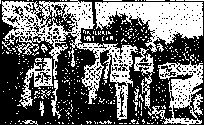
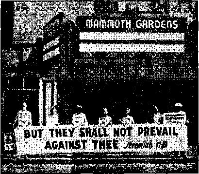
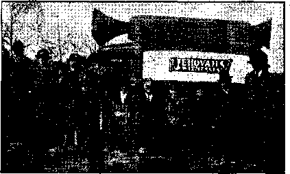
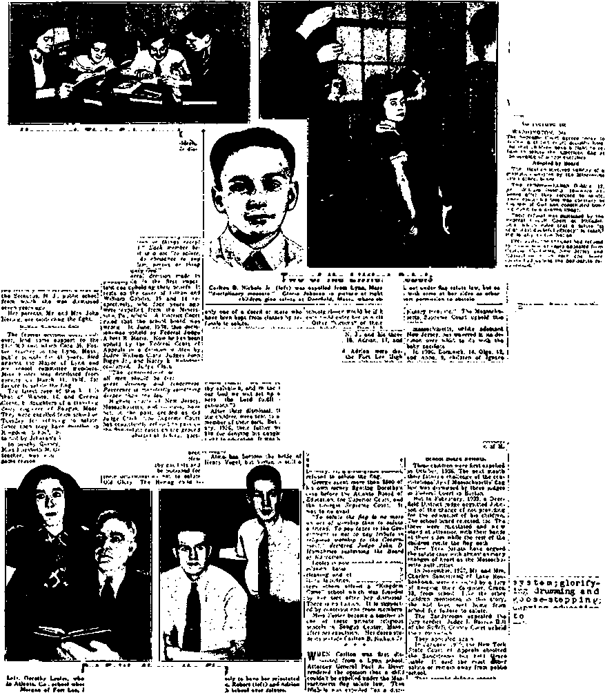
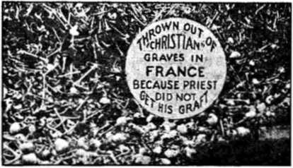
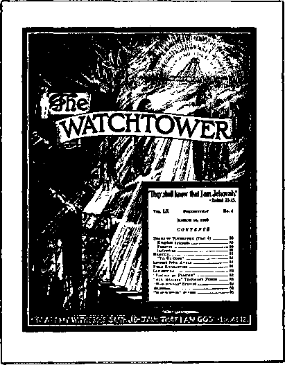

Contents
Appetizers
Roosevelt’s Ambassador to the Pope (Part 2) ■ 3
All Agree Except Liberty-Lovers
Unofficial Papal Representatives
Conspiracies Against the Children
Counsel by J. F. Rutherford
New World's King at the Temple
Under the Totalitarian Flag
Their Tima of Dspra»»ion
The bride of a few weeks noticed that her husband was depressed.
“John, dearest.” she said, 1 2‘I know something is troubling you( and I want you to tell me what it is; your worries are not your worries now, they are ours.”
“Oh, very well,” said John. “We’ve just had a letter from a girl in Birmingham, and she’s suing us for breach of promise.”—Reynolds.
At the Crowded Hour
The doctor was on a crowded streetcar and was forced to stand. Beside him a stout woman vainly endeavored to get her fare out of the pocket of her cloak tightly buttoned as a protection against pickpockets.
After some minutes the doctor said, “Please allow me to pay your fare,”
The woman declined with some asperity and renewed her attacks on the pocket. After some little time the doctor said again:
“You really must let me pay your fare. .You have already unbuttoned my suspenders three times.”—Labor.
Pa»2dena Woman’2 Reply to a Real Eitate Man .
A home ? Why do I need a home 11 was born in a hospital^ educated in a college, courted in a motorcar, and married in a church; I live out of the delicatessen and paper bags; I spend my mornings on the golf course, my afternoons at the bridge table, and my evenings at the movies; and when I die, t am going to be buried at the undertaker’s.—Australian Consolation.
Domeitic Confution.
“Look at that girl dressed up like a man.
I call it idiotic.”
“Pardon me, sir, that’s my son.”
“Oh, Pm sorry ! I didn’t know you were his father.”
“I’m not. I’m his mpther.”—Eau Claire Shopping News,
A Bad Spall
“Long Distance I I want to place a call to Damariscotta.”
“How do you spell it, please?”
“Shucks, lady, if I could spell it I would wr i te. 7f e llyg ram,
“And in His name shall the nations hope.”—Matthew 12:21, A.R.V.
Volume XXI Brooklyn, N. Y., Wednesday, April 3, 1940 Number 53S
Roosevelt’s Ambassador to the Pope
(In Two Parts—Part 2)3
THE most astounding piece of business thus far perpetrated by any elected servant of the American people is Roosevelt’s presumption in sending a personal ambassador to the pope. The sinister implications of this act have been considered at some length in the first part of this article. The second part takes up some incidental aspects of the situation.
Humbugging the American People
The president of the United States, entrusted as he is with the greatest gift in the power of the people to bestow, ought to be above the humbugging of them, and it is a shame and a disgrace that Franklin D. Roosevelt, in sending his ambassador to the pope, pretended3 that it was done for the general benefit of mankind and in the cause of peace. It was nothing of the sort. The deal was all cooked up long ago. The Catholic journals were in on it and the stories that they published before Roosevelt made the appointment give the lie to the reasons alleged at Washington as to why the appointment was made.
The following story appeared in the London Catholic Herald of November 24, 1939, 29 days before Roosevelt summoned Spellman to Washington. It is obviously true, which is all the ihore remarkable because it emanated from the Vatican. The Catholic press can now point with pride to the fact that on this matter, and in advance, they told the truth about something of which the president of the United States, a professed Protestant, told a story.
DIPLOMATIC RELATIONS BETWEEN THE VATICAN AND U.S.A.
From Our Own Correspondent
Vatican City
The Holy Father has recently received in audience Cardinal Gasparri, Prefect of the Apostolic Signatura.
It is possible that the Pope discussed the prob- : able renewal of diplomatic relations between the Vatican and the U.S.A., which were interrupted in 1870. Cardinal Gasparri went to America some time ago to study, it is believed, the juridical status of such relations in the event of the re-establishment of diplomatic relations.
It is well known that the Holy Father is extremely desirous of seeing these diplomatic relations resumed.
FAVOURABLE TIME
This is a most favourable time for the success of such relations, because Roosevelt and his supporters have promised their renewal several times. Though the administration never kept these promises in spite of pressure from Cardinal Mundelein, the 1940 presidential elections make the chances greater because Roosevelt may have to obtain Catholic votes. The situation is favourable also because the Jews in America are now on good terms with the Church and the Communists have of late been less active.'
The message sent by President Roosevelt on the occasion of the fifteenth birthday of the Commonweal, the well-known Catholic weekly, indicates the interest of the President in the Church.
"At all hazards,” said the President in his message, “we must preserve our liberties and above all else liberty of conscience. God speed you through the years in your determination to affirm the Christian conception of the dignity of the individual man.”
All Agree Except Liberty-Lovers
After Roosevelt appointed his personal ambassador to the pope, and invited the president of a Jewish theological seminary and the president of the Federal Council of Churches to sanctify the appointment, the Jewish representative, Dr. Cyrus Adler, made the statement, “We are all in agreement.” What he meant was that four persons are satisfied, Pacelli, Roosevelt, Buttrick (of the Federal Council) and himself. They speak for nobody else. The general secretary of the Baptist
World Alliance, Dr. W. 0. Lewis, issued a -statement that “American Baptists oppose any possible combine of the United States Government with the Vatican’', and there are more than four persons among those Baptists.
It has been repeatedly drawn to Roosevelt’s attention that law-abiding American citizens have been attacked by subjects of the pope to whom the president is now doing obsequious homage. These attacks have been carried out under the direction of the Hierarchy’s priests. Instead of doing or saying anything to protect his fellow citizens in their rights as against this bunch of foreign racketeers, he insults them by glorifying the head of this camorra, every principle of which is contrary' to the American Constitution, to Christianity and to common decency and honesty. ■
An example of the riotous assaults characteristic of the pope-controlled part of the population follows.
Unofficial Papal Representatives
The police of Saco, Maine, sincerely and honestly desire the. destruction of the American form of government and have done and are willing to do all that they can to reproduce in this country the identical conditions that prevail in Germany. Instead of preserving order, or even trying to preserve order, they have encouraged anarchy in its most vicious form- - the breaking up of assemblies of orderly Christian people, met together to study the Word of God. For thus breaking the oaths they have taken to preserve the liberties and the lives of American people, engaged in the exercise of their lawful rights, they deserve long terms of imprisonment behind bars—the usual American penalty for malfeasance, misfeasance and nonfeasance in public office.
Sunday evening, October 1, 1939, a widely advertised meeting of Christian people was to have been held at Red Men’s Hall, Main street, Saco, Maine. The police knew all about the purpose of this meeting, and conspired to have it wrecked. Before the meeting began, a ra.dio shop next door to the hall turned on several radios and sound apparatus, with the volume as high as they could get it, and with no other possible objective than to interfere with the meeting advertised.
This conspiracy to interfere with a Christian assembly (illegal in every state in the United States) was supplemented by a mob of at least twenty men and youths who hooted, whistled, shouted and stamped their feet, trying to gain entrance after the meeting had started. Two personal visits to the police headquarters were made to draw the attention of the officers of the law to these facts. On the second trip the officers, engaged in playing cards, indicated that they resented being disturbed in their Sunday evening pastime. A third visit, more insistent, was made that steps be taken to protect the rights of the audience in the hall.
Thereupon one officer walked by on the sidewalk, asked the disturbers on the sidewalk to cross the street, which they did, but he did nothing about the disturbers in the hallway on the second floor, nor did he linger to prevent the throwing of missiles from across the street, which began at once.
As soon as the officer had departed, the man
Christian assembly room in. Saco after of police visited it. No arrests.
friends
Friends of Saco police invade a law-abiding Christian man’s living room. Nobody arrested.
consolation
4 '
that conducted the radio shop disturbance led the mob to the attack on the hall, showing the gangsters'which windows to break and which not to break. He manifestly tipped them off that they had nothing to fear from the police, and events showed this to be correct.
Nonfeasance of Police
Practically every window in the hall was smashed in the riot that f followed, and for which riot the Saco police are directly respon-& sible, and can blame no one else. An automobile drove up loaded with missiles of all kinds; not only stones, but the usual vegetables and other accompaniments o f those who have no other arguments with which to answer the truth. The number of the a u to m o b i 1 e is known and recorded.
A mob to the number of more than 1,000 collected. According to the Biddeford Daily Journal the police, mentioned by their official name ten times in five paragraphs, understood their duty very well, inasmuch as “neither the police nor county officers could find any law which would prevent the group from meeting”. The law does not specify in detail that police, paid by the taxpayers, shall stop playing cribbage on Sunday evening to protect
"Without benefit of clergy—and strictly unofficial”
Christian people from assault by mobs formed with the knowledge and consent of their higher-ups. The most hopeless moron knows that, whether they like to have their cribbage game interfered with or not, their duty is plain. That duty the Saco police definitely dodged.
Encouraged to do so, the mob went about its work after the pattern so well laid down in Germany, and now understood at all four corners in America. All that is necessary is connivance by the police and it may happen anywhere, and will.
The mob stoned the hall. Practically every window was smashed. Stink bombs were thrown into the hall. The worshipers were driven into the street. While this was going on several police and a deputy sheriff were outside encouraging the mob. One was sitting in a. ear, laughing and talking with some of the mob. Jehovah's witnesses know the leaders of the mob, and so do the police, but no arrests were made, and none intended.
The wrork of destruction ivcnt on. Everything in the hall was smashed. The light fixtures were torn from the walls. Even the plaster on the ceiling was torn off. The equipment of Jehovah’s witnesses was destroyed, a phonograph and many records. Territory maps were annihilated, but the stock of literature of the Kingdom w'as missed, by God’s grace, for at the last minute one of the witnesses threw the master switch of the electric system, plunging the hall into darkness.
The work of destruction went on in the darkness. The mob forced its way into the living quarters of the company servant and pioneer, actually breaking the intervening door into halves. In these living quarters everything was upset. Beds were torn apart, the alarm clock was broken, some of the clothing was ruined and destroyed and the rest of it was thrown all over the place.
The Saco Gestapo out in their car were well pleased. A better job could not have been done in Germany. Now they can go back to the “Reverend Father” O’Whatshisname and get his “blessing”, but if they think that what they started in Saco will stop there, they do not know Jehovah’s people and least of all do they know Jehovah himself.
The meeting which was held in Saco was held in honor of Jehovah’s name. The Biddeford Daily Journal used as its scarehead the words “Saco Hall Wrecked in Protest Against Jehovah’s Meeting”. It was not a bad headline. It was just that. It was Jehovah’s meeting. It is not ended yet.
One woman, a Christian woman of good will, fainted in the police-encouraged riot. How do you Americans like that? And, now that you have put almost all of your police officials under the direction of the pope of Rome, where do you think you and your children are going to get off, presently, when you try to exercise some of the rights for which your ancestors came to America ?
America is in for it, and no mistake? There can be only one end, Armageddon, and thank God that in that holocaust every subject of the pope will perish. It is the only solution; it is Jehovah’s solution. And if you want to be on the safe side you should get on Jehovah’s side now. It is either His side or the side of the Devil—the pope’s side. Take your choice.
A Slip at Newburyport _
The pope slipped on something more substantial than a banana peel at Newburyport, Massachusetts. Jehovah’s witnesses held an orderly meeting on a recent Sunday morning. Then the Papal heat was turned on and the owners of the building called the police to eject Jehovah’s witnesses from the building on the ground that there was “going to be a riot”. Witnesses thereupon called the state police, who told them to stand by their rights and bring charges of assault against any persons, regardless of badges or uniforms, who laid hands on them. When the city police arrived the witnesses were having a Bible study, which is not yet illegal, even in Newburyport. Nobody but the “old Harlot” knows who thought there was “going to be a riot”. The Newburyport police never squawked as to who sent them on their wild-goose chase; and now half of Massachusetts is laughing at them. The pope slipped. Mayor Gillis’ own paper, The Liberator, took a double-column crack at the police of his own city; and as Gillis is himself a Roman Catholic, this discloses him as a man of more than usual moral courage.
Conspiracies Against Faithful Employees
Conspiracies against faithful employees who are Jehovah’s witnesses seem to be recurring with ever increasing frequency, and the information in each case shows the religious animus at the bottom of it, as is always found to be the case where violence has been shown against the Kingdom message. This is all regular. It is a part of the training of priests to skillfully stir up a mob of hoodlums, and, after they have done their will, to then pose in the papers and before the courts as the ones who stilled the tempests which but for them would never have arisen.
In the mails the other day was the story of one of the witnesses in a malt extract establishment. He lost his job through malicious and false testimony against him by a group of Catholic employees. The shameless lies that they told are, of course, all forgiven in advance by their priest, or certainly afterward at the confessional. The remedy is in Armageddon, when all the conspirators will be destroyed together and for ever.
In today’s mails is the story of another one . of Jehovah’s witnesses, a railroad man. A religious fellow employee tried to get this man fired after twenty years of faithful service. The morning of the hearing the witness visited several interested families; two of them invited him to call again. Then came two hours of grilling before four railroad officials, all Catholics, but all honest men. The accuser did not get to first base. He admitted he had called the witness a Communist, which charge was proved to be false. Every other charge he made was also disproved. The result was that the witness was told that he would be given a day’s pay and no charges would be held against him. Since then, the man who made the charges has gotten into trouble himself, not once, but twice.
Conspiracies Against the Children
It is a conspiracy against children to insist that priests or others must teach them traditions of men which are entirely contrary to the truths of God’s Word. In the Guild
Teacher (New York) Abraham Lefkowitz says on this subject:
Recently, several church leaders have given a new impetus to the movement for the introduction of religion into the schools in direct violation of this cardinal American tradition. This has not been attempted by a frontal assault, because these intelligent persons realize the futility of such a campaign. Instead, the approach has been more indirect. Thus far, it has taken a seemingly harmless form such as the right to excuse children during
school hours for religious instruction,—the segregation of children along religious lines and sending them under teachers of their faith to their respective religious institutions. That this movement cannot be lightly regarded is obvious by the recent action of the state of Maine.
The legislature of Maine enacted a Jaw providing that the school committee of each town may authorize a survey of the religious affiliation of pupils attending the public schools and have the consent of guardian for moral instruction. Pupils may be excused one hour weekly to attend their respective places of worship to receive instruction according to their faith. More recently, the National Catholic Alumni Federation adopted a resolution to bring about the enactment of legislation to include religious education within the public schools to be given by qualified teachers of the child’s own religious faith and upon the request of the parents. Such legislation has already been introduced into our own state legislature.
The natives in Africa and other countries are to a considerable extent children. They are trustful of the whites until they learn that the whites are unreliable. The missionaries are as ready as others to tell lies. The London Universe (Roman Catholic) says, in effect, that it has a missionary contributor in Liberia who makes the charge that persons distributing the literature of Jehovah’s witnesses in that country are also distributing Russian Communistic literature. This is a 100-pcrcent lie. Jehovah’s witnesses are forbidden to enter Russia. The lie of this missionary was told before the Roman Catholic Hitler opened his arms and Stalin fell into them. The latest information just at hand is that Stalin and Pacelli are dickering for a re-establishment of religion in Russia, which plainly shows the Pa e el li-Hitler-Stalin conspiracy.
Also (and it is a mighty interesting thing), weeks before the Russians invaded Finland all the Roman Catholic nuns in that country were taken out of the land. Why was that? How did the pope know they would be safer somewhere else? And if they are so eager to do something worth while in the world, why did they not remain in Finland to aet as nurses ? There can be no adequate answer. It is evident that the pope was in on it and probably directly counseled the attack on Finland.
“No Surprise”
John J. Saunders, writing in the London Catholic Herald, states that the pact between Hitler and Stalin was no surprise to any reader of the Herald, which may well be believed.
APRIL 3, 1340
He also described Italy, Spain and Portugal as the Latin Fascist bloc. There should be no surprise ifa that either. The Roman Catholic Church is the wet nurse of the entire totalitarian idea.
It is an old story that you must toot your born if you want to sell any fish; and so it is reasonable, even, though it is funny beyond words, that the pope has the nerve to refer to his “spiritual authority” and to tell the world by radio that when they listen to him they “hear through our voice-the voice of that Christ”, etc'., etc. He went on to say, “We are armed by nothing more than the word of truth,” and, “We speak in the name of God.” No bigger lies were ever told on earth. The Papacy is the child of the Devil and speaks in his name only.
A dispatch from Rome that “Monsignor Cesare Orsenigo, papal nuncio to Berlin, called at the chancellery at noon and was received immediately by Adolf Hitler” shows several things quite plainly, the outstanding ones being the good understanding between Hitler and the Vatican, the reverence of Hitler for the Vatican, and Hitler’s anxiety to find some way to use the pope so that Germany can work out a peace that will enable her to keep what she has so far obtained until she is ready to strike again, in her aim at world
A dispatch from Rome, published in the New York Herald Tribune, states that while the usual income of the Vatican is at least $50,000,000 a year, yet during war time fall to as low as $30,000,000. The dispatch makes the very truthful observation that Cardinal Innitzer of Vienna “was the first to welcome the Nazis when they took over Austria”. The United States is the Vatican’s chief contributor.
Acting under guidance of its Rome-controlled State Department, the United States performed one of the worst series of acts in its career in the way it treated the Spanish Republic. Nothing was done for the Republic, but Franco the Butcher was financed to the extent of $14,000,000 worth of cotton which will be used to compete with American textiles on the world market. The loan will never be repaid.
One of the first acts of the “government” of the Butcher was to provide for the annual appropriation of $6,200,000 a year for the support of the Roman Catholic Hierarchy
7 which placed him in the saddle and them,back in power as iiis overlords.
Claims of the Hierarchy
1. Under the pretense that he is God’s vicar on earth, the pope claims that every soul on earth is a subject of the church, regardless of whether they are members of it or not.
2. When any question arises in which the pope and the civil government cannot reach an agreement, or in which there is a question as to which authority shall have jurisdiction, the decision of the pope shall he final. The head of every government shall he bound by the superior authority of the pope, but the pope is not bound by any authority on earth. True, the church contends that its decisions are infallible only in matters pertaining to “faith and morals”, but the word “morals” can he so interpreted as to include practically anything. Cardinal Manning said: “Politics are a part of morals. What the moral law of the Ten Commandments is to the individual, polities are to society. Politics are nothing more than the morals of society, the collective morality of Christian men united together under social law—polities are morals on the widest scale.”
3. The pope claims the right to use force, if necessary, to punish or exterminate non-believers or to force them into the church. Each government shall recognize this right and it is their duty to assist the church in enforcing this dogma.
4. Regarding dissenters or non-Catholics: they need not be treated with justice and humanity, nor accorded the elemental rights of human society. The pope claims that non-Catholics live in error and error has not the same right as truth; that inasmuch as their very existence is an offense to God, they are not entitled to the right of free speech and freedom of worship which the church demands for its subjects. Therefore the existence of any individual, or sect, or the dissemination of any fact or opinion which does not agree with Catholic doctrines shall be suppressed.
It is utterly impossible to believe these doctrines and at the same time believe in tolerance, free speech, and free press and religious freedom. To any one who believes in this medieval conception of human rights, democracy just does not make sense. Yet, every member of the Catholic church knowingly or unknowingly gives assent to these and other doctrines of similar un-American content, sueh as those concerning civil and mixed marriages, divorce, separation of church and state, the right of the (de ctor ate to choose how and by whom they shall be governed, etc.
In Question and Answer form, these doctrines are printed in the text hooks used in Catholic schools and instilled into the minds of Catholic youths; yet Churchmen constantly plead that government should be used to support the schools where these un-American Catholic doctrines are disseminated.
Very little attention has been given to the fact that the Roman Catholic organization is a dictatorship, identical in spirit and form with the modern' Ea.scist dictatorships, for which it has served as the prototype.—The. Truth Seeker.
The President’s Objective
What can be the president’s objective in appointing a personal ambassador to the Vatican, making that ambassador out of a former head of the steel trust, and dragging the spokesmen of the Protestants and Jews into the scheme? It is not to make peace. The attitude of the British speaks plainly enough on that. Quite possibly the pope knows that Adolf is licked and wants to help him find a way out; but a much more likely thing is that Jim F ar ley and Roosevelt want the combined influence of Big Church, Big Business and Big Polities to say that it is quite all right for America to take orders hereafter from the pope, which means, in essence and in fact, the stopping of the proclamation of the message of God's kingdom, if that can be accomplished.
As to the Protestants, it is inevitable that their bishops should be blind. The very fact that they are religious bishops makes them that way. So none should wonder that, when the “Right Reverend” Henry St. George Tucker, presiding bishop of the Protestant Episcopal church, New York city, said in a sermon that future ages would look back to the twentieth century as one of the dark ages in the history of mankind, he followed that truthful statement, with the proposition that “we must endeavor to establish a Kingdom of God on this earth” and thus “co-operate with Jesus Christ in bringing a kingdom of righteousness and justice to this sorely beset world”. If the politicians, the preachers and the plutocrats have progressed no farther in some 6,000 years than to make the world the bedlam that it is today, when would the same crowd produce on earth a condition where God’s will would be done as it is done in heaven? The answer is, Never; and religion, the Devil’s substitute for The Theocracy, must go into oblivion, where it belongs.
Myron C. Taylor, former chairman of the United States Steel Trust, selected by Roosevelt as his personal ambassador to the pope, was bom with a silver spoon in his mouth and became the head of the steel trust by reason of that fact. Like Roosevelt, he is a professed Episcopalian and, according to Roman Catholic theology, eould be put to death as a heretic for believing the same things Roosevelt is supposed to believe. But nobody need suppose that Taylor will be in any danger at the Vatican. He lives much of the year in Italy and is well acquainted with Pacelli and other higher-ups in and out of Vatican City. Besides that, he is said to be extremely, religious.
Jehovah’s people have been taught by the Lord, through The Watchtower (1938), that the conspiracy (2 Chronicles chapter 20) between the Moabites, Ammonites and the inhabitants of Mount Seir against the land of Judah pictured beforehand the conspiracy of the deeply religious Big Business crowd, the group of hypocritical politicians and the group of conscienceless religionists against The Theocracy. These all have as their objective their continued dominance of the world and the hindrance of the Kingdom message.
It must not be supposed that Roosevelt selected Taylor particularly because he is very religious, but because he is a shining representative of Big Business, and, for that matter, he is still a director of the United States Steel Corporation and an open and unblushing admirer of Mussolini and Fascism.
Big Business and Peace
«&Big Business, especially the steel business, is not interested in peace; ft it ig interested in the biggest busi-i^^As^ness of all, which is mass murder. BBKfl Petty hold-ups are impractical and unpopular. The money cost of the World War was sufficient to build a $2,500 house containing $1,000 worth of furniture, on five acres of land worth $100 an aere, for every family in the United States, Canada, Australia, England, Wales, Ireland, Scotland, France, Belgium, Russia and Germany. The war slew ten million soldiers (one-fifth of all who went into it), and 28,000,000 civilians died of war-born starvation, disease and massacre. The munition makers made the most of the opportunity and are now secretly smacking their lips over the profits of the new war. All can remember Morgan’s interest in the war of 1914-1918.
Some thirty-odd years ago J. Pierpont Morgan, Sr,, patron saint of the Steel Trust, pumped the New Haven Railroad so full of water that it oozed out at every joint. The New Haven bought steamboat lines, trolleys, hotels and other things at fancy prices, and just as they had arrived at the place where they no longer yielded a profit. Since then the stock of the road has been waterlogged and now the Interstate Commerce Commission advises that the best thing to do is to wipe out all the preferred and common stocks, because the corporation cannot pay anything on them.
During the World War there was a big difference in the price of eannon fodder. Uncle Sam paid the highest price. His soldiers received wages almost three times that paid the British soldier, ten times that of the German, twenty times that of the French, and twenty-five times that of the Italian. But, even then, his soldiers were expected to lay down their lives to make the world safe for democracy for only $1 a day.
A review of 3,421 years of human history shows that in that time there have been 268 years of peace. All the remaining years were years of war in which some 8,000 peace treaties were broken to smithereens.
A front-line veteran who was in every battle from Chateau Thierry to the Argonne says that he saw men with their stomachs torn open by shrapnel and with their bloody and muddy hands trying to gather their entrails out of the mud and stuff them back in place again, mud and all. He sees the same old propaganda now under way as he swallowed, hook, line and sinker, in 1917.
The British understand clearly that the United States Neutrality Act had as its objective the helping of the Allies to win the war against Hitler without coming into the open and saying so. The Germans understand the same thing. United States Senator Wm. E. Borah made the statement:
The Bill is, in fact, legislation providing in effect for intervention in a great European struggle for power, in the hope by some, and the belief of others, but not all, that we will be able to take part in this struggle under such terms and conditions as will enable us to escape the more serious sacrifices of war.—In the Manchester Guardian.
When the armistice came of age, 21 years after it was declared, the thing to celebrate was not that the world had been made safe for democracy, but that it was spending six times as much for armaments as in 1913, and was well into the second world war. Moreover, instead of “open covenants openly arrived at” the world witnessed an era of shameless double-crossing unequaled in history. None of the objectives of the first world war were attained; every solemn promise to the people was broken, as was, of course, to be expected. This generation seems to think loyalty to any trust whatever is a weakness.
♦ Class I railroads have about 1,767,000 freight cars, 44,700 locomotives, and 40,000 passenger ears.
Large numbers of roses and other cut flowers are shipped from Pacific Coast to Atlantic Coast cities in refrigerator ears attached to fast passenger trains.
About fifteen million tons of ice—enough to make six hundred million 50-pound blocks —are used each year by the railroads to keep freight and passengers cool.
Cooled ears for the transportation of perishables were first used in 1857, when one railroad insulated some of its boxcars and, after loading, placed ice in the doorways.
♦ In the year 1931 the railroads brought-1,000,000 ears of fruit and vegetables into New York city, but six years later the number was reduced to 800,000. In the six years there was actually a large increase in the New York, consumption of fruits and vegetables. These figures give some idea of the way in which, the trucks are cutting into the business of the railroads. An odd feature, however, is that many of the railroads are nutting into their own business and buying truck lines which carry their freight all the way by truck instead of part way by rail.
♦ A big advertisement for the railroads is H. L. Ferris, of Arkansas City, Kansas, who for the past 46 years (and' he is now in his 90th year) has declined to sleep otherwise than in a ehair because he had such a comfortable night in one on a western railroad a lifetime ago. Well, the railroads of the West do have some very comfortable re dining-eh air seats, and no mistake, but most Americans will continue to long for the mattresses and springs and sheets and things sometime around the midnight hour.
♦ Welded streetcar rails are in use in many parts of the United States. Now reports from Britain are that the London and North Eastern Railway has an unbroken track 1,260 feet long and that the experiment is a success in smoother travel and reduction of noise. All British rails are carried in cradles which may assist in making practicable in Britain what. is not considered practical here.
♦ Mrs. Marion Rice Hart, not familiar with navigation, but a graduate of the Massachusetts Institute of Technology, conceived the notion that it would be fun to sail around the world in her own ship. So she bought a 73-foot ketch in England and made a start. By the time she had arrived at the Suez Canal she had discharged four skippers and decided to navigate the boat the rest of the way herself. In another two years she visited Australia and New Zealand and recently rounded Cape Horn, after more than 5,000 miles across the open ocean. Some skipper!
♦ Out of New York bay, but attached to Bayonne, New Jersey, has arisen a new land of 160 acres, dug from the bottom of the bay itself. This new area is surrounded by a retaining structure forty-two feet thick. The inner edge is wooden sheeting. The outer edge is of concrete, and the interior of riprap. A channel 650 feet wide surrounds the new piers, providing 35-foot draft at low water. Fifty of the 160 acres are expected to provide transit facilities for 2,500,000 tons of freight annually, and 110 acres will be available for industrial sites.
♦ .Dodging the U-boats, shipments to Britain and France, from the Orient, New Zealand and Australia, no longer go by the Panama Canal but are sent to Vancouver, where they go by rail across Canada to Atlantic ports and are reshipped. To handle this business^ $30,000,000 of new equipment is being pro- -vided for the railroad.
♦ Eighty years ago the British Admiralty conceived a new form of anchor and had it patented, and in 1939, in the island of Sardinia, an old Roman galley was found equipped with an iron anchor having the same features as those in use today. The movable transverse piece was in use 1,800 years ago, was forgotten, and then was rediscovered.
PUT silverware in a glass container and put the lid on tight and you will never have to elean or polish your silverware. If silver not in use is wrapped in waxed paper it will be free from tarnish and ready for use at any time. Moist table salt will remove egg tarnish from silverware.
When packing china for mailing or moving, have plenty of excelsior on hand. Each article should be wrapped in moist excelsior a few days before it is shipped or stored, so that when the straw dries it will have assumed the shape of the wrapped article, thus forming a protective framework.
One of the strongest cements and the easiest to apply for mending crockery is lime and the white of an egg. To use it, take a sufficient quantity of the egg to mend one article at a time. Shave oft a quantity of lime and mix thoroughly. Apply quickly to the edges and place firmly together, when it will soon become set and strong. Mix but a small quantity at a time, as it hardens very soon so that it cannot be used.
When china cups are tea-stained, rub them with a cloth dipped in vinegar-moistened salt to remove the stain.
When purchasing inexpensive flower containers one may find them to be quite porous, permitting water to seep through and mark furniture. To prevent this pour melted paraffin into the vase to the depth of an inch, which does away with this trouble. The vase may be washed, avoiding very hot water.
Furniture of simple construction is easier to keep clean than that wuth fancy carvings and scrolls, and looks better by far.
To remedy furniture drawers which stick, sandpaper and wmx their edges. When casters on furniture keep dropping out, pour a little paraffin into the hole, insert the caster and let the wqx harden.
A little vinegar will soften dried glue.
If your polished table gets a white mark on it, due to heated plates, etc., rub with camphorated oil. This will remove the mark. To remove finger marks from furniture, use a piece of chamois wrung out in cold water and polish with dry chamois.
Furniture polish not only bestows a luster upon furniture but preserves and “feeds” it, prolonging its life. This is true only of an oil polish of good quality. Every application is beneficial to both woodwork and furniture. The use of an oiled cloth when dusting makes frequent polishing less urgent.
To keep mice away, scatter small pieces of camphor in your cupboards and drawers. They will go far away from the smell of camphor.
Legs of tables and chests soon dig into the kitchen linoleum and leave permanent marks. To prevent this, get from your neighborhood shoe repair man a strip of composition such as he uses to renew worn-down heels. Cut neat “heels” for your furniture and tack them on with headless nails that will sink down inside, and there will be no more scarred floors. Heavy felt will do as well as the composition material, except for very heavy furniture.
Dust is most successfully removed from reed furniture when a hose is used. Set the furniture on the lawn when the sun is shining and play the hose on it.
To wash oil paintings, make a suds of pure white soap. Have water lukewarm. Apply to small surface of picture at a time and dry immediately.
A couple of well-hung mirrors can do wonders to the small living room. Hang the mirrors where they add to the size as well as the attractiveness of the room.
A drop.of perfume on an electric light bulb will scent the whole room. Perfume, however, is no substitute for fresh air.
Sundry Suggestions
To test silk, bum a small sample. If it curls up into a black charred ball, it contains practically no weighting, rayon or cotton adulteration.
To take the shine from serge goods, rub it with hot vinegar and then sponge with ammonia.
Wet umbrellas should always be turned upside down to dry, never left open, as this stretches them at the ribs and prevents their being tightly, rolled afterwards. When not in use they should be kept unrolled.
Coal oil will soften hardened shoes made so by the rain.
A thin coat of shellac or colorless varnish will add life to straw matting, at the same time giving it a pleasing gloss.
♦ October 28, 1939, information march advertising “Government and Peace” at the Courthouse park the following day. Some 200 listened to the lecture. Sixty booklets and a number of Salvation books placed with audience. Some 75 witnesses participated in the march in the afternoon, and 60 in the evening. No opposition. One storekeeper seeing three people going back and forth was somewhat disturbed, and remarked, “They are taking the whole block,” although the three men were of ordinary size. One gentleman walked along a little with a witness and said, “I am with you folks! I mean I am with Jehovah, Christ, and Judge Rutherford.” Some could not tell whether this was for religion or against it.
October, Visalia, California. Some 100 were in the march. The police said there was “an ordinance against it”; when the crowd marched they “couldn’t do anything—too many of them”. Following a march there, while we were witnessing, a woman spoke to one of the witnesses: “Do you kpow those who marched here? Are you one of them?’’ The witness replied, “I was one of them.” Then she said, “Do you know that ybu people are stirring up the people ? The preachers here are fighting among themselves, and one of them has left town.” This woman took literature and is interested. A pioneer plays a German record, “Enemies.” The woman then remarks, “Is dat Hitler?” Before getting a reply, she says, “I want that book.”
Hanford, California. A march took place advertising meeting at the park. It was reported that a priest was at the lecture, “Government and Peace,” but left when he had heard all the records except the last two. Too bad! Too bad! Fresno witness reported that at a back-call the lady, feeling her responsibility, ordered ten Salvation books. They are going like bananas:—by the bunch.
What causes a sigh ? The Bible tells of some people who ‘sigh and cry because of the abominations’ in the land, and some who ‘sigh and groan’ under great trial. (Ezekiel 9:4; Psalm 102:19,20) There is another class that sigh because of the truth being told. At a funeral held in California, when the one in charge announced that for ten minutes Judge Rutherford would be heard on “Dead” and “Resurrection”, a deep sigh went out of a woman who was present and such sighs continued throughout Judge Rutherford’s talk when the “clergy” were mentioned. It seems strange that the mention of the name “Judge Rutherford” almost kills some people.
“Ham and Eggs.” For months California has had one of the biggest campaigns for and against the “thirty dollars a week” retirement plan. Thousands of poor people and old people sent in their thirty cents per month to headquarters and leaders of the movement. Discussions could be heard everywhere, in meetings, in the parks, on buses, and elsewhere-—“Thirty Dollars a Week”—“the biggest thing that ever happened, and when it passes here it will spread all over.” Wholesalers poured forth their view's to businessmen, warning them that under no circumstance would they ever accept “warrants” for merchandise. Banks fought in their way, accusing the movement as being “Communistic” and leading to “dictatorship”, and pictures illustrating such views on billboards everywhere. Ham & Eggers were organized and had districts with their captains. Many people who have read Judge Rutherford, not appreciating the situation fully, were strongly for “Ham & Eggs”. Over the radio fine arguments were presented to show how this movement could kick out the banks, etc., etc. Letters from Canadian Government purporting to show how prosperous they are there with warrants or similar things were spread everywhere. The other side had their letters from Canada showing there had been a failure. At the meetings here it was told by “Ham & Eggers” that the audience would be asked first of all to salute the flag. It amounted to a religious frenzy and to a belief that “this is beginning of God’s kingdom”. Ham & Eggers w'ere absolutely certain this time they would win. Well, yesterday was November 7, and this morning papers report in big headlines, “Ham & Eggs Defeated 2 to 1.” They say the fight is not ended; and evidently it is not. But a great disappointment ! Some who claim to be of the truth, and pretty good people, too, and who are associated with the work, more or less, were urg-
Jehovah’s Kingdom publishers just before baptism in the Susquehanna river, near Pittston, Pennsylvania
ing others to register and vote, and possibly these who did the urging voted. It seems such should see that the Jw’s are ‘‘neutral” as to ham and eggs, even as we are about other worldly schemes. We hear some say that Governor Olsen talked favorably before aljout It and “got in” on that, but now is unfavorable toward the scheme. Governor Olsen has done some good things, but, of course, it is hard to be a public man and please everybody.
Because many of these readers of our books were “Ham & Eggers” the witnesses here have had considerable difficulty in interesting “interested” people to come to our meetings, and since it has hopped for the present, these people may have greater interest in the Kingdom. These “Ham & Eggers” are not all poor people, nor jobless either. But they are for it because they think they are doing great good for the aged. 'Witnessing to some they say, “When ham and eggs fails, then Ell read Judge Rutherford.” A year ago, while in Oakland giving out circulars for “Face the Facts”, an old gentleman took a circular and, looking at Judge Rutherford’s picture, remarked with considerable emphasis, “If that man is not, for Thirty a Week, he’ll neveh git in 1” Only the Kingdom will thoroughly solve the “old age” problem, because the obedient will remain young and have plenty and need never retire.
Religion. An undertaker reported to the writer that at a certain Catholic funeral the “solemn high mass cost $60”, and was paid. It takes three priests one full hour to perform “solemn high mass”. The poor cannot all get for their hard work even 20e an hour, but these priests earned $20 apiece per hour without giving real consideration therefor. It is a great racket and there are some people who “love to have it so”. If these people had obtained the little booklet Uncovered for only 2c, and believed the Bible as therein quoted, they would have saved $69.98.—D. Davidian.
♦ The St. Louis Post Dispatch, referring to the victory of Jehovah’s witnesses in the Ilag-s&lute cases, said: “it is a victory for common sense over hysteria. It reasserts the common decency that calls for respect for another man’s conviction—a man who may be doing more than any of us to build a better nation even if he believes that he should make obeisance only to the Deity.”
♦ Witness (with Bible and Watchtower Bible helps, knocks on door; smilingly addresses man who opens door) : Good morning. I have brought you a message of warning and of comfort {Ezekiel 33:7; Isaiah 61:1-3] that the new King is so graciously extending to His loyal subjects, that the willing-hearted may now learn of Him and find refuge in His name. [Isaiah 9:6,7; Psalm 22:28; Isaiah 2:3; Zephaniah 2:1-3; Proverbs 18:10] (Witness sets up phonograph as he talks. Sheep and family listen attentively to lecture)
Sheep: I want to ask some questions about this new government you are talking about. My wife and I have been seeking a place to bring up our children, and we have not yet found what we want. The clergymen have told us quite a lot about places called Heaven and Hell. We know we don’t want to locate in Hell, and, to tell the truth, Heaven doesn’t exactly seem to suit our needs-—we being just plain earthly sort of folks—but this city you’ve been speaking of sounds more like it might be the place we’re looking for, Wiiat is the name of this city ?
Witness: It’s-name is Jerusalem, a city of truth. [Zech. 8: 3]
Sheep: Where is it located?
Witness: It is very beautifully situated alongside Mount Zion—so lovely that it is the joy of the whole earth, indeed! [Psalm 48: 2]
Sheep: What form of government does it have >
Witness: A pure Theocracy. [Psalm 2:6; Psalm 47 : Daniel 2:44; Revelation 11:17]
Sheep: Since we are used to a democratic form of government, would it be hard for us to live under such a new form?
Witness: Oh, no. The people rejoice when
All in one family at San Antonio—it’s catching
IS A SNARE AND A RACKET CHRISTIANITY IS THE WAYOF SALVATION ■sswBBssne ...........
Signs of the times (10 feet by 18 feet) near San Antonio, Texas
the righteous are in authority. [Proverbs 29:2]
Sheep: What are the requirements for citizenship ?
Witness: Each, citizen is required to have clean hands, pure heart, and humble mien. [Psalm 24 : 4: Micah 6:8]
Sheep: Is it a healthful place?
Witness: Indeed, yes. The Sun of righteousness shines upon the inhabitants with healing in His wings 1 [Isaiah 58: 8 ; Jeremiah 30:17; Malachi 4: 2]
Sheep: Do the people get along well with one another?
Witness : They surely do. You see they have but one way of doing and seeing things, and all are very willing, dwelling together. in pleasant unity. [Jeremiah 32:39; Psalms 110:3; 133:1]
Sheep : Do we have to join anything to enter this city?
Witness: No. The Lord bids you seek Him and He will do the rest. [James 4:8; Amos 4:5; Zephaniah 2:3: Matthew 6:33] ■ Sheep: What does it cost to be admitted?
Witness: Admission to this beautiful city is entirely free to all loyal subjects of the Everlasting King. [ Jeremiah 31: 6-12; Isaiah 55: 1 ]
Sheep: Then we will go with you—I and my house! [Zechariah 8:23; Joshua 24: 15] —Contributed by Pat Casey Green, Texas. (Don’t you dare try to guess my church!)
At Convention time, 1939, Denver took solid comfort in the year text
♦ Hubbard, Ohio, is in a bad way. Christian people cannot peaceably walk on the streets of that burg in an information march without going to jail for it. There was such a march on a day last summer. Tillie Williamson, Margaret Atsberger, Grace "Ragin and Arthur G. Saylow testified that they saw certain people going down one side of the street and up the other, peaceably, without guns, without knives, without blackjacks, without clubs, without, sh.il-lalahs, without shouting, without singing, without drums, without cymbals, without tambourines, without rocks, without bricks, without peculiar dress, without vile or profane language, without speech-making.
The witnesses could all remember well that the marchers had borne slogans reading, “Religion is a snare and a racket,” but seemed to have to have it drawn to their attention that they also bore the exhortation “Serve God and Christ the King”.
Counsel made it clear to the court that the ordinance is illegal. Under it the crowd emerging from a theater could be arrested for not having a parade permit; the same for children emerging from school; the same for persons emerging from churches or Sunday schools; the same for funerals ; the same for vehicles of the fire department; the same for the Grand Army; the same for the Kiwanis, the Rotary, and the Boy Scouts ; but all in vain. The bonehead oii|the bench fined McLcnne S25 and costs or a sentence in jail, and McLenne was in the same situation as Christ before Pilate.
Of course, the real Judas in the case kept out of sight, but Tillie "Williamson. Margaret Atsberger, Grace Eagin and Arthur G. Say-low and the police and magistrate of Hubbard, Ohio, probably know perfectly well who it is. Judas finally died with a peculiar collar around his neck. In the end it choked off his wind. The Judas in Hubbard, no doubt, has a peculiar collar, too.
♦ The car had broken down, and another one was loaned to the publisher to get to an adjoining town to wait for a ear part to come from a larger city by bus. The time waiting for the part to come was spent in making back-calls in the town, and playing the “Government and Peace” lecture. At one place where a publisher had previously received am invitation to come back, the interested one listened to the lecture with the keenest interest, and at the conclusion, when Judge Rutherford called for all of those who are in favor of God’s kingdom to say “Aye”, the person of good will shouted out “Aye” and tears of joy filled her eyes. She readily took the book Salvation and the Gove mm ent and Peace booklet, and asked that arrangements be made for her to be baptized. This was done, and on my turning to leave she said, “Don’t leave until you have left me some of the books and booklets so that I can go in the service around my home. Even though I am crippled, walking on crutches since I was three year’s old, I can go two or three miles.”
Truly this is the Lord’s doing and is marvelous in our eyes,.....Zone 3, Region 2.
Jehovah’s Kingdom publishers at Clinton, N". J. ' {To be continued)
Homework Their Schoolwork
<* Oplrl.uljs kl, Maibi< Il on I la dJ9ry fbrrcvr, Aaaljr* hip ch-'1
Hy MA KT JI A MARTIN
F°u nearly a decade the problem of how to handle' baby pacifists—school children who refuse to salute the United States flag.because their faith and their parents forbid it—bas been bothering educa
tional authorities. ? ~
Ntr-ti it decision by the Third I .*>> Jl Vni'.ed Staufts t?ircuit (knzrt of J
Aprils, uphouliiis this ,rrti
to refuse to 8U-'jtvr has them : iij rfcetriiii btc wweAi'pcr?
fliK. B.i-. il dorti'.'L Fill" in of th.a deC'don, Vivian Hcrir.ir, 1?, '•
}uiD bpri-ril'.y bwh-wfuarii a irnt io ।
Bnitre Suppc-tl* bllit.
tdwal driHsion does., hov-
diiiMii'ered tSat Vivian, I Am J, u<r ' 1<
r.eihHtf iAr 5|7* t'Mfl of (Ar (CcA. • Robert
fair. S*r Ei-kiwl bw SJjiyiTr, kcSerl ifipiriModri,
ypL ia. Na. 49
New York, Sunday, March 17, 1940*
64 Main-PM Brooklyn+2Q ComiE-.-2Q CoSorotn
Baby Pacifists a School Problem
lEnfl . fol
floj .ratatr of pc it-
Cod
ThO6e
Two of rhe Ljfffesf Rehe/s
TX« Mtiawwrii. ■
a. Kulodne:
tu flap u no men
h ppW rr.e»t*d or. t ram-
rail* Afrniskty God.1 The frri
JfTiiUWfK
June, J li-SH, Uut <MH- j, xfnifl .Yfrijit ffcilfr«n g/ Sili.^dwf* an?. J14Tii?] .Mtiryta, I MiaMtli'Oser
KjpifiMCxm, i Sfciry jfiri^xr, V«?S -dureiMra by the public Stbocl Urt,^ ' ■.if Eklr-Li-rbiUr-, SUs*. !n MhJ, 11117, I
the Her-
ti’hoiil *1 SjiURin CetiLiC.
j.-jrnat ifhp u'li-i weuilci* J7ciaraar -hi Iha • World (Tar-
ruf Foifh Above the Flag
rido constitution.
:■. whU dtliflilr *nod(fl.
-| J iix-. ^K-rinta OCJiTiitf >nuD(i:. u — —
11 Sue thr Itlnt friltnJ dtfifllna ^.1 rigntSJ IB&klng
- 1 rarrsla tbui a^i is confUaica iJcaia. flag a Fttg*
fa *iirol]sa in ... _ ,
ia-jJLii. riitir.- , -ha fag-sur
a I rd w;t41 tThi> Lfth Ttfse of the ..Z3’ii i Itndfrreir P**lTd i-Ridi: "Wi wiil rtioict in'
bl^r. i«nc.dS nj
LuUriflF FM not
rijse/irtf /rc-m i\a jam rr*oef.
ijirpcui sii't the first parent Io luau liia job in □pboJdiaj *i> faith and his chiMrtfl. '
rieptTE. rr-L/Tan ' _ , , , . . •
for IH'ND."™ ’■:Hi“- ?‘v'
• •, I*’ inure ui'ti-i iiiirii char.
their-, dc'j ifi'.inac.n -i
iJecrx-e LwiiS. t ru picketed by mtretfra of the Kkj Kha aftar hi a diitgliter, Di:Tntky, n, k a'.ath-rr-tdk ftnrUnt,
Dorothy end EE-
CEKTS
WNIJWKE
(halt father ve» Jicoaees^ed feu Lot priViidijir proper «'jodlij<. Hi '»w twjre El: 1.4—k icti! of <60. Th rhJJdiu were DTiiered to atbrod Un Hlm'iiditi Tr*inia( School, a Cyin ul ri'fyrpi 'tjchuol!
Xifiwcial WitliiT., Dorothy, aftd Gluii< J sib "j a on, children CL JuEuod, a farrrir*.
BcbiwL Huard Hrlmla.
The circulation of the New York SUNDAY NEWS la a a id tu he about 3,500,000 apples. So thia la hot a bad adve r tl a erne st of ths Children’b viri tries a Ing in the public so ho a Is, on the flag-aa-lutf? la sue. Tho U. 3. Sup rose 0 our t will hear thia cause about last week in April*
SUPREME COURT AGREES TO RULE ON FLAG SALUTE
Wi’J Review Decision Holding Children Have Rifiht to Refuse ttx-Sal’jjfo
jvery true J^mer* 3 can detents en-I'craed patriotism and. legal oppression of children; pretended fright at CCEnnunisn; us-<ng the flag to cloak activities of aaoundrels;invasion of rights of warship and of freedom of speech; parading Faacisio; and' regimenta ticn of America to the pitiful levels of Germany, Italy and Russia; humorless ( stupid attempts at uniformity; eoer--. clonof confloiorjaq; pretended rig hts .to regulate even the minds of oChora; adulation of niiitary powers : nr.d emblems; xuak-, Ing 1 t easy for , trt.ibors to claim
I breaking down the I Arnerican echaol
nylng education Little folks; iraking hypocrites ; of them; groasly irisiultlng every’ thing, for which the flag Sts nd$

IN A.D. 29 He was anointed with power from on high to be the King, at the time of His immersion in the chief river of the Holy Land, the Jordan. Three and one-half years later, or, to wit, in the spring of A.D. 33, He rode as King, attended by a great multitude of people of good will, into the unfaithful city of Jerusalem, and straightway went to the temple there and cleaned out of it the commercial religionists. Shortly thereafter a great triaj and test eame upon the King’s faithful adherents and supporters when the King’s work on earth was stopped temporarily by death and His supporters were scattered. The third day after His death the Supreme One raised His anointed King out of the grave. Forty days thereafter the King ascended on high, going off to a “far country”, even the presence of God in heaven itself, there “to receive for himself a kingdom, and to return” and then set up the Kingdom, oven as He had told His faithful supporters before He left them. At that time also He comes to the greater temple, the spiritual temple of God the great Theocratic Ruler.
Since the .Lord, the King, Christ Jesus, is invisible to man, He being now a divine spirit impossible for man to see and live, His second coming is invisible. He said to His faithful apostles: “Yet a little while, and the world seeth me no more.” (John 14:19) Therefore proof of His coming to the true temple of Jehovah God must be made by evidence other than that which can be seen with natural eyes. Also the time of His coming must be determined by the evidence of related physical facts, based upon God’s revealed Word of prophecy.
When God took away from His typical theocracy (the nation of the Jews) the right to rule He stated then that this would be for a fixed time, until the coming of the One whose right it is to rule, and that to Him He would give that right and power. At Ezekiel 21 : 27 He announced concerning the rulership; “I will overturn, overturn, overturn, it: and it shall be no more, until he come whose right it is; and I will give it him.” Although the Lord Jesus possessed all power and authority from the time of His resurrection, it would seem to be inconsistent for Him to exercise that power against the enemy’s organization of the Gentile nations on earth until the “times of the Gentiles” expired, as marked by a world war. —Luke 21: 24.
In harmony with this one of the King’s supporters wrote: “But this man, after he had offered one sacrifice for sins for ever, sat down on the right hand of God; from henceforth expecting [waiting] till his enemies be made his footstool.” (Hebrews 16:12,13) King David of Jerusalem had written centuries before that: “The Lord [Jehovah] said unto my Lord [Christ], Sit thou at my right hand, until I make thine enemies thy footstool.”— Psalm 110:1.
The Bible proof is that the “times of the Gentiles” should continue 2520 years, from Jerusalem’s first destruction, in B.C. 606, and ended in the autumn of A. D. 1914. That should mark the time when Christ Jesus assumed His power to reign, in fulfillment of prophecy. At that time He must become active in the midst of His enemies, as foretold at Psalm 110: 2. Then the Gentile nations would become angry and a great world war would follow, attended by famines, earthquakes, „ pestilences, and thereafter “distress of nations, with perplexity”.—See Revelation 11: 17,18; Matthew 24 7-22.
The events that took place at His first coming as a man find a parallel in the events of His second coming as a divine spirit, invisible to human eyes, to oust Satan the invisible “prince of this world”. The Scriptural evidence is clear that the Lord Jesus was anointed as King and began preaching the Kingdom in the autumn season of A.D. 29. In the spring of 33, or three and a half years after His anointing to the Kingdom, Jesus presented himself to the Jews as their King but was rejected by them as King. At the same time He entered the temple at Jerusalem and began to cleanse it. (See Matthew 21:1-13.) About the same time God, through Christ Jesus, formally east off that nation and its house of religion.—Matthew 23 : 38,39.
The Gentile Times ended in the autumn of A.D. 1914. The evidence is quite conclusive that here the Lord Jesus Christ, in obedience to God’s command, stood up and began to exercise His power. (Consult Daniel 12:1;
Psalm 110:1,2; Revelation 11:17-19 ^Matthew 24: 3, 7, 8.) If we are warranted in applying the rule of parallel events, as to features and time, then we should expect the Lord to come to the great spiritual temple of God three and one-half years after assuming the Kingdom, to wit, in the spring of A.D. 1918. If this is true, then we should expect also to find evidence that the Lord there began to cleanse that antitypieal temple; and that shortly thereafter “Christendom”, which is the modern counterpart of unfaithful Jerusalem, would be completely rejected by the Lord as doomed to destruction at the battle of Armageddon.
In the autumn of 1914 the nations became angry. The World War came, followed quickly by famine, pestilence and earthquakes. Then occurred persecution of Christians, the people of Jehovah God, and other events foretold by the Great Prophet as marking the end of Satan’s world or uninterrupted rule. That was the time, as shown by the inspired Scriptures, when the new world’s King would take His power and begin His reign. The date parallels exactly with the time when He began His royal ministry at His first coming. Three and one-half years after the autumn of 1914, to wit, in the spring of 1918, there came upon the consecrated people of Jehovah God a great fiery trial at the instigation of religionists who used the World War as a timely occasion against those true Christians. This came exactly in harmony with the prophecy of Malachi as to what would occur when the Lord Jesus as the great Messenger of Jehovah God comes to His temple.—Read Malachi 3:1-3; also Matthew 24: 9-13.
In harmony with this the apostle Peter says that judgment must begin at the house of God, His temple. -(1 Peter 4:17) The real purpose of the judgment is that the ones who are found approved and cleansed or refined should thereafter offer unto the Lord God an offering in righteousness by serving as witnesses for Jehovah and for His Theocracy by Christ Jesus. The trial that came upon those connected with the temple of God in the spring of 1918 was a very severe one. Some of God’s consecrated ones were arrested and east into prison. Some who had been engaged in the Lord’s service, professing full consecration to Him, conspired with the religionists as enemies of the truth and betrayed their' brethren, even as Jesus foretold would be done. (Matthew 24:10) In the face of the World War conditions and persecutions others became fearful and fled from giving an open witness to the Lord. Others separated themselves into sects claiming to be followers of Christ Jesus, yet refused to have any further part in the service of announcing Jehovah’s Theocratic Government by Christ Jesus.
Thereafter when the political and commercial powers brought forth the League of Nations, then the professed temple of God or organized religion became the advocate of that League and hailed it as "the political expression of the Kingdom of God on earth”, and the Roman Catholic Hierarchy climbed up on top of the arrangement and reined in its actions, as in the case of Japan’s attack on China, and the Italian conquest of Ethiopia, and the overthrow of the Spanish republic by the Fascists and Nazis. Thus they denied the coming of the Lord and His theocratic kingdom to bless the people of good will on earth, and openly allied themselves with the enemy ■ Satan’s scheme. Thus organized religion of “Christendom” is proved to be a snare and a racket, and is doomed to everlasting destruction at the battle of Armageddon, just as Jerusalem was destroyed not long after the King Christ Jesus rejected the Jewish nation.
There are many other facts in proof, but so far as the facts cited appear they conclusively meet the requirements of the prophecy. These facts are known by all people of good will to be true, and known to be in harmony with the prophecy. Therefore they may be taken as competent and reliable evidence establishing the fact that Christ Jesus, as the Representative of the great Theocratic Ruler Jehovah, came to His temple in the spring of the year 1918. Armageddon now impends, and it is time for all people of good will to hear and attend unto the Kingdom message. “But the Lord is in his holy temple: let all the earth keep silence before him.”—Habakkuk 2:20. ______
Half the World’s Chemicals
♦ Dr. C. M. A. Stine, in an address at Miami Beach, Florida, before a prewar committee of one hundred leading industrialists, scientists and publicists, declared that the United States is today producing half the chemicals of the world, can take its own nitrates from the air, manufacture a substitute for rubber that is better than rubber itself, make its own camphor, and shortly will have a silk, nylon, that will be equal to that produced by nature.
♦ A new metal, within two-tenths of one percent as hard as diamonds, the hardest known substance, has been produced by a Pennsylvania metallurgical chemist. The new metal is composed of tungsten (used in electric light filaments), titanium (used as a pigment in white paint), and carbon. With this new metal alloys have been made so hard that they withstand pressure of three hundred thousand pounds a square inch. The new metal has been used to make valves for deep oilwell pumps where there is tremendous wear. Two such valves have been driven together by a pneumatic hammer 600 times a minute, at 25 pounds for each blow, without showing appreciable wear after an hour and 45 minutes of hammering.—Australian Consolation. .
.♦ Such advances have been made in America in the cracking of oils that in 1938 the demand was filled with less than half of the crude oil that would have been required under previous treatment. There are now being recovered from once abandoned oil fields greater amounts of oil than the fields originally produced. Even though the treachery of United States militarists did put American engines into the German planes, Germany has not at present either the oil supply or the aviation experience available in the western world, accessible to Britain.
♦ A new device drives an open-end ten-foot can deep into the sea bottom, even when six miles below the surface. Samples of the sea bottom are then brought to surface, and disclose, as might he expected, that the ocean bottom is a treasure house wherein are stored rare ores and many other things of great interest and value to man.
♦ Sir Leonard Hill, London surgeon, thinks all the radium now buried for security from bombing might better be left buried. He states that radium in an intensity sufficient to produce an effect is always harmful and that its use for the treatment of cancer has resulted in many cases of intolerable and unrelievable neuralgia.
♦ The mass-spectograph, which some misinformed newspapermen and others have associated with the so-called “divining rod”, is a scientific instrument for weighing atoms, and is so sensitive that it will weigh and analyze a quantity of gas no larger than a pinhead. It is used to locate oil deposits, on the principle that very small quantities of gas rise to the surface above every such deposit, even though it be two miles underground.
♦ For man to have descended from the ape would require millions of years and 100 links; and of such there is no record or trace. Life can produce life only after its own kind, from creation till now. Grass can never produce a tree, and if in any way the body of a man is to be made from a single living cell, the mind of the Creator, as well as the fashioning hand, must be present every step of the way.— Dr. A. T. Schofield, in an address at. the Victorian Institute, London.
♦ An improved barograph, used in California, throws some light on the odd jumping of sound waves. Cannonading will occasionally shake doors and windows 200 miles away and be unnoticed fifty miles nearer the scene of action. Probably the sound waves strike the electrical ring surrounding the earth at such an angle as to be reflected more readily to distant points than to those nearer the point of origin.
♦ The light that glows from the firefl5r is caused by the burning of sugar, and when a little more sugar is added to the diet of the firefly the fire is a little brighter. This light, 97-percent efficient, is eight times as efficient as the most powerful lighting mechanism known to man.
♦ A new use for silver has been found in its inclusion to the extent of one percent in stainless steels. The new steels are practically immune to pit corrosion, which has been one of the principal defects of stainless steels hitherto.
♦ If you did not know the truth that “the dead know not any thing”, that when a man dies “his thoughts perish”, and that there is no hope for any except in a resurrection of the dead, you would be considerably impressed by the way in which texts that have no possible relation to the state of the dead are strung together to support-the “purgatory” racket.
A little book on the subject, 24 pages, put out by the Paulist Press, says that “the souls in Purgatory, the Church suffering, constitutes one great division of the Universal Church of God. It is the realm of darkness and suffering”. Match this with the Scripture statement that “Neither work, nor reason, nor wisdom, nor knowledge shall be in hell, whither thou art hastening”.—Ecclesiastes 9:10, Roman Catholic Douay Version.
It says, “No one on earth can love God so perfectly as these Holy Souls now love Him, because none see Him so clearly.” What a horrible idea, that Almighty God gets any satisfaction out of seeing poor creatures that love him so “perfectly” suffer more than here.
If they are perfect in love, then why must they remain in “purgatory” ?-l John 5:18,19.
It also says, “The Catholic Church does not teach us anything definite, either about the nature or the duration of the pains of purgatory.” Then why be so fresh about selling indulgences with a hundred days off for this, and a hundred for that ?
The little book refers to “the angelic purity and patience which they display in the midst of their pain” and that these “are all insufficient to ward off one drop of that fiery torrent”. How come the writers to know all this?
There is a hint that ‘when God gets them into “Purgatory” ’ the only ones that can do anything for them are the priests; for “all their patience and love are without the slightest merit in the sight of God: the little things they once did were precious before God, but the great things they now suffer are as nothing”. How did they find that out? Did God tell them so on the side ?
The misused texts are Revelation 2:23, “I will give unto every one of you according to your works.” This has no reference to “Purgatory”. God is not waiting to “give” it to somebody when He gets them where they cannot help themselves.
Malachi 3:2: “He is like a' refiner’s fire” ' applies now (since 1918) and in this life, not in a “purgatorial” existence. The same text says, “He is like fullers’ sope.” Most certainly the people in “Purgatory” have no use for soap.
Hebrews 10:31: “It is a fearful thing to , fall into the hands of the living God” and to thus go into destruction. This has no reference to “Purgatory”,
Matthew 12:36: “Every idle word that men shall speak, they shall render an account for it” does not mean that it will be fried out on a hot griddle. There is no question that most men decide their eternal destinies by their words, their expressions, what use they make of their knowledge of God.
Hebrews 12:6: “He scourgeth every son whom he receiveth.” The scourging is in this life, not in “Purgatory” hereafter.
Luke 12:47,48: “Beaten with many stripes” or “beaten with few stripes” also takes place in this life, not in the hereafter. Men are responsible for the use they make of their knowledge. They are also responsible for unwillingness to acquire the knowledge they might have had. ।
1 Corinthians 3:11-15: “He himself shall be saved; yet so as by fire” is also a reference to experiences in this life. This has no reference to “fiery experiences” beyond this life. The meaning is that it is hard to frankly admit mistakes. Thus, it was a great mistake to suppose and to teach that one man was “the faithful and wise servant”. It led to fiery trials for many.
Psalm 41:2-4: “My tears have been my bread day and night.” This refers to experiences of sorrow in this life, not in a future one.
Matthew 5: 25, 26: “Thou shalt not go out from thence [the prisoh] till thou repay the last farthing,” That is merely another way of pronouncing the judgment of everlasting destruction. The debtor will never be able to pay, and will remain forever in death.
Matthew 7:2; “With what measure you mete, it shall be measured to you again.” This takes place in this life, not in the future.
Thus all the “Purgatory” texts disappear.
“Purgatory” is not mentioned in any of them. There is no such place. It is all a terrible hoax and a racket besides being a horrible blasphemy against God’s holy name.
♦ When it was first suggested to Mayor La Guardia that many New York policemen are members of “Reverend Father” Coughlin’s “Christian Front” organization, committed to taking over the United States Government by bullets instead of ballots, he made light of it, but at length was pressed into sending out 16,903 questionnaires to members of the force to find out where they stood. Six refused to answer, 27 admitted they were still members, and 407 admitted that they had been members, but stated that they had withdrawn. In a subsequent statement the mayor said:
The immaturity of the young men arrested, their visionary plan to overturn the government, all indicate that some master mind, or minds, not yet disclosed, were working on these young men and the membership of these various organizations, encouraging and inducing them to wrongdoing, disloyal and criminal acts.
Mayor La Guardia knows perfectly well the “master mind, or minds,” back of the attempted breaking up of the huge Christian assembly in Madison Square Garden on June 25, 1939. The newspapers of the time admitted it, and 1,000,000 copies of Kingdom News No. 4 were circulated in New York city, particularly calling the attention of Mayor La Guardia to his own remissness and that of his Roman Catholic police in not protecting the speaker and the audience on that occasion. But his administration arrested and prosecuted those that actually did the work the police were requested to do, and which it was their duty to do, and which they flatly refused to do. ■
Big Advertisement for Lourdes
♦ It was a big advertisement for the Lourdes grotto when it received Fred S. Suite, Jr.-, and he was immersed in the cold water for a half hour. But it would have been a bigger one if he had been healed, which he was not. All the papers could say was that he had found “peace and spiritual strength”. That is a simon-pure evasion. He went to Lourdes in his iron lung and came back in it. If the Lord were doing the healing at Lourdes nobody would go there a helpless cripple and come back in the same condition as when he went. The Lord does not do things that way.
♦ Pierre Van Faassen; one of the best-posted newspapermen in the world, born in The Netherlands, but a British subject, thinks it quite possible that Hitler can conquer America, and has put his reasons in a remarkable article in the Liberty magazine for February 17, 1940. He looks for Germany to get all the wheat and oil it needs from Rumania and Russia; for Japan to seize the Dutch East Indies and thus obtain its own supply of oil and other necessities; for German forces to march through The Netherlands and Switzerland for the conquering of France by land while Britain is to be destroyed by air. German and Japanese aviators would destroy the Panama Canal, and the rest would be easy. Van Paassen does not mention the Roman Catholic Hierarchy in this world-plan, but that is really the key to it. It will be observed that the objectives are the few remaining Protestant countries, The Netherlands, Switzerland, Britain, and the United States, and that the combine against them would be Germany, Italy, Russia and Japan, all objects of tender Vatican solicitude.
♦ On February 11, 1940, the Japanese government inaugurated a “Holy Yea ri’, after the manner of the Roman Catholic Hierarchy’s “Holy Year” of 1933, later extended to 1934. None of these years have been or are holy. They have all been and are as full of the spirit of the Devil as an egg is full of meat. The Japanese emperor wanted all his subjects to “answer to the divine spirits” of his imperial ancestors. It is just too bad, hut his imperial ancestors did not have any divine spirits; they are dead; they know not anything. These are the teachings of God’s Word. They contradict* the teachings of the Japanese emperor and of all other religionists, including President Roosevelt and Myron C. Taylor and the pope.
♦ Said Manton, in his appeal to the United States Supreme Court, from the decision which found him guilty of selling decisions of bis courts to litigants who could assist him financially:
From a broad viewpoint it serves no public policy for a high judicial officer to be convicted of a judicial crime. It tends to destroy the confidence of the people in the courts.
♦ No one can deny that when President Roosevelt sent Myron C. Taylor as his personal ambassador to the ]>ope it was in all essentials a union of church and state, for the reason that Taylor is to bo paid out of public funds. When representatives of the Baptist, Lutheran and Seventh-Day Adventist denominations called on the president and stated that they objected to any union of ehurch and state he told them that he appreciated their position and approved in principle their position. The Truth Seeker says caustically that this statement is mere Jesuitic demagoguery and “so might a swindling merchant caught in weighting his scales reply that in principle he approves of sixteen ounces to the pound”.
♦ Maybe you have never heard of the Madonna of Bourguillon. But it seems that she is a person of considerable prominence in Switzerland; so important, in fact, that the “Mast Reverend” bishop of Geneva recited the following prayer to the lady. It seems that this business of praying to women is widespread.
“We beseech thee, O Mother, to protect our country once more unci to obtain from thy Divine Son the peace of which we have such. We place ourselves in thy hands and promise thee absolute fidelity. We consecrate to tins* all those who are dear to us, our living and our (lead, ourselves, our families, our parishes and our army, the sentinel of our independence and of our liberty.”
♦ A dispatch from Washington states that “of the white workers in the Chicago stock yards 98 percent are members of the Catholic church”. That may be true, and in view of the fact that only 20 pewent of the American people arc Catholics one wonders just why it should be true, and why it is that people who eat no meat on Friday should have a virtual monopoly of preparing the meat for others who eat less fish.
Coughlin Losing Influence
♦ “Reverend Father” Coughlin, once designated by his friends as the “Savior of America”, seems to lx* losing influence. At one time his followers could deluge Congress with telegrams and letters and seriously affect legislation. Now it is all in vain. The last time it was tried (on the embargo question) the influence exerted by the usual sheaf of telegrams was almost nil, and the result actually so.
♦ In the July 31,1939, issue of his paper “Social Justice” “Reverend Father” Coughlin carried screaming headlines “Christian Front Carries Fight Into More States”; and. in the August 7 issue of the same paper, said, “The place for you, as a Christian, is on the Christian Front.” In The Commonweal (Catholic weekly journal) appeared the admission:
Father Coughlin, The Brooklyn Tablet, Social Justice and their many abettors and sympathizers must bear the direct responsibility for the plight of these 17 young men. For months The Tablet’s correspondence columns have been the free public forum for the national director of the group, John F. Cassidy.
♦ The Brooklyn Tablet is authority for the statement that—
In the four centuries of its existence, the Protestant church has failed to produce even one “saint” in any of its numerous branches, and the same will be said after another 400 years if the Protestant church still exists, because the Catholic church has a monopoly of “saints”.
That, makes it an even 100 percent, and hearing no objections, and the vote being unanimous, the motion stands as read. Religion and Christianity are opposites, and there are no saints in the Catholic religion or in any other religion.
♦ What is all this story from Rome about the pope’s losing things? First he loses one of his cuff links. It dropped off; one of his devotees swiped it, and then sent him anonymously' a 1,000-lire ($52.62j) bill to recompense him. And the next story is that only a few days later he lost his so-called “Ring of the Fisherman”. It dropped into the mitt of another devotee who had just kissed his hand. The po]>e missed it, and a few minutes later the man gave it back. Good boy.
♦ The London Catholic Universe tells how “The Cure d’Ars” informed a woman whose husband had suicided that her husband had repented between the top of the bridge and the water into which he plunged, and so had landed in “■Purgatory” all O.K. All she would have to do would be to cough up the proper amount. He explained that it was “the most Holy Virgin” that had fixed this up for the suicide (and the priest).
♦ The history of the last thousand years tells us that wherever the Church of Rome is not a dagger to pierce the bosom of a free nation, she is a stone to her neck and a ball to her feet, to paralyze her and prevent her advancement in the ways of civilization, science, intelligence, happiness and liberty. Though not a prophet, I see a very dark cloud on our horizon. And that dark cloud is coming from Rome. It is filled with tears of blood. It will rise and increase till its flanks will be torn by a flash of lightning, followed by a fearful peal of thunder. Then a c.vclone, such as the world has never seen, will pass over this country, spreading ruin and desolation from North and South. After it is over, there will be long days of peace and prosperity; for popery, with its Jesuits and merciless Inquisition, will have been for ever swept from our country.—Abraham Lincoln, 1861. Sixteenth president of the United States.—From The Golden Age No. 28, October 13, 1920, page 6.
On the edge of a French cemetery for poor Catholics. Find father or mother.
♦ The Roman Catholic Canadian Freeman stated that “the Ontario public school system is all wrong’’, that it is ’‘responsible for training hosts of infidels” and slaughtering the souls of countless children, etc., etc., and then the figures were published that in 1933, in proportion to the population, there were three and a half times as many Roman Catholic-trained children brought before the Juvenile Court as of other faiths. In Ontario, in the same year, there were, in proportion to the population, almost five times as many in jail. Those trained in parochial schools would not even know how to figure out these proportions.
APRIL 3, 1340
♦ Are we, then, bound to go on fighting until a prostrate Germany lies like a doormat over which Bolshevism may march to the Rhine and the Alps? Is there nothing beyond the alternatives of a Nazi Germany and a Bolshevik Germany? A Berlin under the control of Moscow has for years seemed to me as nearly certain as any future political event can be, but that does not exclude the possibility of a Catholic Confederation extending from the Rhineland to the Carpathians, leagued with and supported by a Catholic Italy, a Catholic Spain, a Catholic Portugal and (for miracles do happen) a France under Catholic leadership again at last.
Can we hope for a furthcr miracle of grace that would bring to so unmistakably Catholic a league against State atheism the backing, if not the membership, of Great Britain?—F. R. Hoare, in the London Catholic Herald.
♦ Our task is to think out the lines of a European settlement in which the great Powers can wield influence proportionate to their strength, culture, territory, and in which the smaller Powers can be guaranteed the greatest possible amount of independence and genuine protection from their greater neighbors.
The invasion by Russia, let us be clear, has altered the whole situation. Europe must as soon as possible find a way of settling her problems and uniting on a realistic basis. Italy, Spain, the smaller neutrals, they are all asking for this. If anything. Germany should be helped, not hindered. Half Germany already sympathizes with us in such a task. But supreme tact is necded.-London Catholic Herald.
♦ The influences which dominate the American Youth Congress seem quite clear. At one point, in their congress in New York city, Gael Sullivan (guess his “church”), assistant to Mayor Edward J. Kelly of Chicago (guess his “church”), made a dramatic address boosting the man in the White House and orating against political and civic corruption. When he had finished, a young man from Brooklyn rose and suggested that he was shocked that advice of this kind would come from Chicago, where corruption is even more advanced than in New York. That was as far as he got, and friends of Sullivan and Kelly booed and catcalled so that he could say no more.
23
Honest Editor Quits
Dr. Salvador Martinez Lovo, editor of the El Salvador Catholic weekly Criteria, resigned his position rather than publish the lies of Italian and Spanish priests who had insisted that the weekly should justify Ger-, many’s conduct in Poland. This very plainly shows that the Vatican was really back of the Hitler-Stalin deal for the division of Poland.
Campaign Against Free Speech
♦ In its campaign against free speech in the United States the Roman Catholic Hierarchy bobbed up in Massachusetts where Flaherty (guess his “church”) introduced a bill proposing cancellation of citizenship and deportation of naturalized citizens who advise or support or are members of any organization, association, society or group that advises, advocates or teaches principles of government based in whole or in part upon opposition to or discrimination against individuals of any religious creed. If this bill should pass, and anybody should object to persons’ holding office who teach that they have the right to murder people who teach differently, he could be punished under the law.
The Perfect Hypocrisy
♦ The perfect hypocrisy of Cardinal Villeneuve and the Quebec police in their war against what they are pleased to term “Communism” is well illustrated in the total seizure of literature on one occasion, when there was taken from its owner 489 gospels in French, 24 gospels in English, 1 French' Bible, 1 French New Testament, 1 English-French dictionary, 20 French tracts and 1 English chorus book. The cardinal is seared stiff that the people might learn something and he might have his racket shrivel.
The Lost Rake-off
♦ At Montreal the relatives of a woman who had been out of the Roman Catholic sect for seven years entered her home, after her death, and attempted to work the old gag that they had a paper signed by her before her death that she had turned Roman Catholic. They demanded her body, so that it might be buried in Roman Catholic ground, and thus the “church” would get the usual rake-off. In this instance the husband called the police and the noisy relatives had to beat a retreat. The funeral and interment were conducted according to his wishes.
Vatican Propaganda in Britain
♦ The idea that Germany, or at least Westphalia and possibly the Rhine provinces, will shortly have a Catholic monarch who will build up a new and more truly “great” Germany is held by a number of people who have read (at great risk of severe punishment) a cyclostyled circular recently issued in the West of the Reich.
This circular contains a set of verses originally issued from the Monastery of Kollin, in Brandenburg, in the twelfth century.
These verses are of a prophetical character and foretell that in the latter days a great war shall arise. The Kaiser shall leave the land. Then, although it is a time of peace, yet it is unrestful, A man from the humble ranks of life shall rise to the highest position. He will have one success after another.
Germany w'ill be known as “Great Germany”. There will be few Jews remaining in the land. When the leader of Great Germany is at the pinnacle of his power he will do something that will bring about a new World War, at the end of which Great Germany will be annihilated.
After that a new small Germany will arise which, under a Catholic monarch, will achieve true greatness. The pope, who will be one who does much for the cause of peace, will not long have reigned and will, under pressure of circumstances, leave Rome.—From the Hague Correspondent of the London Catholic Herald.
Spanish Inquisition Progressing
♦ The Spanish Inquisition is progressing nicely. With the same high-minded disposition as Torquemada, Franco required every person who was loyal to the Spanish Republic, and served in the Spanish army, to appear before a military tribunal to explain why he was loyal, instead of disloyal, like Franco himself. The same rule applies to all civil servants of the government, and even concierges of apartment houses. Naturally, the cowardly squeal on others and the results are all that even Hitler could wish. Armageddon will settle it all for ever. In the meantime Spain is short of wheat, olive oil, dried vegetables and sugar, which are the principal foods of the common people. The British Catholic who started all this by illegally flying a plane to Franco, so he could start the rebellion, merits contempt equal to that of Franco himself;
■ (To confined)
♦ (Missouri)—Civilized nations are preparing for war, which means that the picked young men of the race will soon be brutally, coldly and deliberately dragged from their loved ones by gold-braided general staffs, and marched into the slaughtering pen where bayonets gleam, cannons roar, bullets whizz, tanks mash, bombs explode, and gas steals —into no man's land where blood spurts, entrails drag, bones snap, jaws vanish, bowels are slashed, faces are mutilated, throats are cut, eyes are blinded, ears are deafened, heads arc decapitated, brains are blown out, arms and legs are blown off, and bodies are blown to bits—and wdiere billions of flics swarm over the bloating, bulging and befouling corpses of dead young men who but a few days before were the living flowers of the human race.
At the rear, the flower of womanhood will be compelled to strap quivering stumps, unwrap mufflers from gaping wounds, pull bandages out of empty eye sockets, remove coat sleeves from the cavity of missing stomachs, wash tangled entrails mixed with mud and gore, smell the sickening odor of gangrene, see young men gasping for breath with lungs eaten out by poison gas, hear the scream of those whose faces and bodies are burned with fire, and to know that some mangled bodies will survive, only to endure a living death.
The clergy will preach “eloquent” sermons about the “honor and glory of war”, and mouth sweet nothings to the deluded soldiers about the “blessed privilege” of ‘laying down his life for his friends’, and the “joy” of being a Christian killer in the army of the Lord, with the cross of Jesus going on before the butchery, “in the war to end war.” The clergy of opposing armies will thumb the same Bible, try to break into the same heaven, and dodge the same hell, yet each will petition ferocious prayers to the same Universal Father to bring victory to their troops, and destruction, and defeat and death to their enemies. Think of a church praying for the safety and success of its members as they sneak out of filthy dugouts at night bent upon a murdering expedition, and crawl through rusty barbwire entanglements and drop into slimy hell holes to throw deadly “iron pineapples” at other church members, who have been similarly prayed for in the army of the enemy. What does a smelling and swelling carcass filled with boring maggots and worms care about this kind of brotherhood? All prayers for victory and carnage are a horrible blasphemy upon the God of Life, —Edward Kuper, in The Truth Finder.
Business Cut in Half
♦ Normal business was cut in half with the outbreak of the new war. At least that inference may be drawn from the fact that before the war Uncle Sam sent 11,600 sacks of mail to Europe every week, and after the war got under way only 6,600 sacks,
♦ In 1919, in the London Daily Herald, cartoonist Will Dyson pictured the four elder statesmen emerging from Versailles with a little child standing behind the doorway crying bitterly, and marked with the letters “Class of 1940”, A true prediction.
I am a Jew and proud of it. Religion serves man and attempts to please man. Christianity seeks to please God, The Constitution says “ —that every man possesses the right to worship Almighty God according to the dictates of his own conscience. In Jersey City and adjoining towns a modern dictator instructs his magistrates who act under his direction and must obey or lose their jobs. There no Christian, no Jehovah’s witness, can go from place to place and even invite you to come to a public meeting without being subject to arrest. A Communist has as much right to free speech as any religious speaker who has caused so much damage with his babbling that many of our large radio chains refuse him the time on the air.—“Non-Partisan,” in the Atlantic City Press.
♦ That radium is no cure for cancer, or for anything else, ought to be clear to any who reflect on the awful fate that has so far overtaken young women who painted radium signs during 1917-1925. Every one of these young women is either dead or dying. The twentyeighth recently passed away.at Hillside. The women were each given $10,000 cash, annual pension of $600, and annual medical allowances of $600, and were told there is no hope for any of them.
♦ For fifty years Miss Mary Pfeifer, Hoboken, has been winding spider threads for surveying telescopes manufactured by instrument makers of her city. The best threads come from spiders captured in fields, barns and pigstys. The house spider does not spin a thread fine enough or elastic enough for the work. Each spider is used but once, because spiders will not eat in captivity.
♦ It seems that the Italian Government lottery' has been collecting some $2,500,000 annually in the United States, despite the fact that in America lotteries are illegal and the mails are closed to them. It so happened that the principal office of the lottery in America, 26 which chanced to be in Newark, found it was going to have to pay out $400,000 in one week. That would have busted the. bank anyway; so the police were tipped off, the place was raided, and the bets for that week were not paid. Not a bad way of getting out of a jam. And do you expect the managers of a lottery to be square with the public?
♦ Too close to radio station WBBR to make a living at his former religious racket a minister gave it up and got a job on the WPA. Then he disappeared from home and his wife went to the police to report the facts. The desk sergeant said, “Of course, you are very anxious to have your husband back?” Whereupon he received the astonishing reply, “Oh, not particularly. I don’t care whether he comes back or not, but I want my bicycle that he rode away nn. It helped me to reduce from 300 to 180 pounds and I have got to get off some more.” This happened in Bayonne.
♦ The McFeelys of Hoboken are good to one another. Mayor MeFcely always awards the contract for ash and garbage collection to the James J. McFeely, Inc., concern of which his brother is the president. Mary McFeely, his sister, is the treasurer of the company. Joseph B. McFeely, his nephew, is the manager of the company. Edward McFeely, his brother, is chief of police. He has three nephews on the police force. Bernard McFeely is a captain, and Dennis McFeely and Edward McFeely are lieutenants. Guess the “church” of the McFeelys.
♦ At Wildwood a lion, which had spent the summer riding in a sidecar of a motorcycle as a woman drove the machine around a motorcycle drum until it was almost perpendicular to the side, escaped from its cage, killed a Japanese salesman that was about to enter his automobile, and then after two hours in hiding made for a policeman. He was charging full speed and got within five feet, when the policeman, John Gaeres, armed only with a pistol, landed a bullet in his right eye and he suddenly became a subject for a taxidermist.
consolation
In Austin, Texas, the average home with an electric refrigerator Stand a radio and perhaps a few other electrical outlets will use <53# from $2.50 to $5.00 worth of electricity per month, and according to Dr. Miller, of the physics department of the University of Texas, who is a home owner, he pays from 8| to 9 cents per kilowatt-hour for the five or six dollars' worth of electricity he uses each month. However, this is considerably less than in many of the smaller towns in Texas. In San Marcos the average home using electricity pays from 15 to 20 cents (sometimes even more than 20 cents) per kilowatt-hour.
Of course, industrial users of electricity everywhere are allowed a much lower rate per kilowatt-hour than home users. It is claimed that were they not allowed a low rate they would produce their own power and the home users of electricity would then be charged, higher rates than at present. Along the Colorado river the Government has built dams which could furnish cheap power to a great many communities, but this blessing the power trust will not allow.—H. E. Coffey, Texas.
♦ Anarchists broke into Gonzalez county, Texas, and into the sheriff’s office, of all places. One of the chief deputy sheriffs, Wallace Ray, seems to be the bead anarchist. He “escorted” out of town two persons who were trying to hire cotton pickers. Terrible crime, this offering money to people in exchange for work, isn’t it? Also, the same sheriff’s office issued an order that all persons not otherwise employed must pick cotton. The argument for re-establishing slavery at the point of a gun was:
We have a fine crop coining on and we need all the pickers we can get. We are not going to stand around and see the crop ruined for lack of field hands.
♦ In the Kansas prison for. children, otherwise known as the Beloit Reformatory, one little child of nine who had forged a cheek was beaten, confined in a dungeon, and then sterilized. Sixty-one other girls were likewise unsexed for infractions of the prison rules.
APRIL 3, IMO
♦ Texas has some nice prison guards. Eight young men broke away from the Eastham, Texas, prison. Finally the guards came up with two of them, but although the boys were unarmed, and begged pathetically for their lives, Roh Parker, the guard, who felt he had the opportunity to murder a fellow creature which no doubt he had long craved, shot them both down in cold blood. This was too much for one of the observers, Sheriff Archie Maple, and he stated the facts publicly. Possibly Parker will be reproved, in an apologetic manner, by somebody higher up, but it is not very likely. The evidence is all the other way in America. Anybody in a uniform can commit murder with reasonable surety of no serious punishment.
Screwed Together in Oklahoma
♦ Dr. Earl McBride, Oklahoma City, Oklahoma, told the Southern Medical Association that in mending bone fractures he uses airplane screws, made of an alloy of magnesium and aluminum, and that—
When left in the bone tissue the magnesium gradually disintegrates into gas which then is absorbed by the blood stream; the free aluminum also is eliminated gradually.
Makes a fellow^ who knows anything about the effect of loose aluminum floating around in the blood hope that Dr. McBride will not have any occasion to screw him back together if he falls on the ice or something.
Consolation is too crowded with other important news to devote more than passing attention to the,aluminum food poisoning still going on as strongly as ever.
♦ At the time Roosevelt was re-elected, in 1936, one Kansas City man was so interested in the success of the New Deal that he voted 298 times. Another man marked 20 ballots in a series, and later marked 14 more. One precinct captain ordered election officials to give the Republican “around 60 ballots” and claim the rest as Democrats. The district attorney, Milligan, who uncovered all this rottenness, wras shaky about his job, for a while. What is going to become of the country if a patriotic New Dealer can’t stuff ballots into the box to make sure the New Deal will.be “approved”?
27
British Comment
By J. H emery (London)
• About three years ago the dignitaries of the church of England, faced with an agitation raised by hundreds of the clergy who had dabbled with spiritism and had fallen victims, saw themselves under the necessity of taking some action. As this church is not a totalitarian organization like the Roman church, the parsons could not be arbitrarily silenced in their demand for liberty to adjust the prayer book rule of service to their new ideas. The archbishop of Canterbury appointed a committee to investigate "‘spiritualism”. The commit tee took two years in its investigation, and reported its findings a few months ago. The two archbishops, Canterbury, and York, and 24 bishops considered these findings, and have decided they shall not be published. The plain reading of that decision is that these men have bumped against something they don’t want to talk about. Naturally the spiritists are jubilant, though, so sure are they that the committee has met with evidence in favor of their claims, they would Ixs better pleased if the report were published. The Roman Catholic church has always set itself against spiritism, and in this has conformed to the Scriptures; but not for love of the truth, nor that it might be a true supporter of the Scriptures, for its claim is that the Scriptures arc given to it for use in support of its church. The fact is that, if it is possible to talk with the dead, as spiritists claim, the dogma of “purgatory” “goes with the wind”, and “purgatory” not only is one of the props of tlie Roman Catholic church, but is, perhaps, the most profitable of its rackets. It is easy to see why spiritism is anathema to the Roman Hierarchy. The church of England has not got its dead on its hands, and it does not know where they are; but the phenomena of spiritism has proved itself too strong for these hundreds of parsons and they have fallen to this deception of the Devil. Forsaking the light of the Scriptures, they go into the dark, to spirits that “peep and mutter”, and get their proof (!) of their dogma of human immortality from them. (See Isaiah 8:1.9.) If the archbishops and the bishops had the light of the Scriptures in them they would have dealt with this deflection of the clergy in a very different way. The fact is, of course, that they all are in the dark: the archbishop of Canterbury says, “It is not proposed to publish the report at present, as further investigation is required.” Just so! And in the meantime the demons, who are now particularly active, will get the better of them all, and will lead them into further darkness and then to destruction. These great church systems not only have ignored the instruction of the Word of God, the Scriptures, but have used them for the purpose of building up their organizations. They have played tricks with the holy Scriptures, picking out passages to support tbeir dogmas, perverting plain meanings, and, as in the case of the Roman church, have made the sayings of their own supporters to be accepted on equal authority with the words given by the spirit of God. Sometimes some of these principals of the flock speak candidly of their position: they know they are wmndering about as in a fog, uncertain of their steps and lacking anything to guide them on their way. One of these wrrote recently, “Moreover, bow can we speak of the Trinity as a divinely given "truth of revelation’ when we know well that it has been hammered out by generations of human thinkers and still remains incomplete ?” Jehovah’s witnesses, enlightened with the truth which Jesus brought, and faithfully following His words, know that the dogma of a trinity of gods—-which is what that dogma really amounts to—is Satan’s masterpiece of deception fastened on the churches.
• The ""Hierarchy of Authority” in Rome has set itself the task of bringing its church into great<!r prqpiinence in England. What it is doing behind the scenes is known only to those in the Hierarchy’s cabinet in the Vatican; but its public works and intentions are openly stated in the Roman Catholic newspapers and journals. No doubt the present troubled situation is considered as providing an opportunity specially favorable to this purpose. The antagonistic attitude of Russia towards Britain since its pact with Hitler'has made it easy for the British hierarchy to throw in its support for the Allies. To them it is a fight against its dreaded enemy Communism, which, of course, has no use for religion, and which in power in Europe would clear all organized religion out of its way, as its chief enemy to its progress. The black outlook in Europe for the in* crease of the power of the Vatican is, no doubt, a very good reason for its endeavor to get a greater hold in Britain, and England in particular. The Roman Catholic newspapers under the urge of the Hierarchy and with its “blessing” are combining in a set purpose to get their journals into the homes of all the people. A systematic drive is being organized, so that every house shall be visited, and newspapers canvassed for, and leaflets—apparently free from any propaganda for the church— shall be left, for the moral and spiritual uplift of the people. To give a “spiritual” backing to this purpose the pope ordered that prayers should be made by all Roman Catholics for the conversion of England, and their saint Mary has been specially invoked to Attend to this matter. That church wants to have the worship of Mary—better described as mari-olatry—fastened on England as it was in preReformation days. The Hierarchy tells its people that England is particularly dear to Mary, for it was in England, in the days when the Papacy held rule, that the newly fashioned dogma of the immaculate conception of Mary, the mother of Jesus, was most firmly held and taught. That Minding piece of darkness has been of the greatest service to the Roman church, for by it the Papacy got its chief aid in the exaltation of Mary into worship of her as if she were as exalted as the Scriptures tell of Jesus. And by this newly 'fashioned dogma the Devil got fastened on that church his older scheme of getting men to believe that the power of God was held in a trinity of father and son and mother. This old pagan doctrine, from the time of Nimrod and the rise of old Babylon, became one of the most prominent features of “Babylon- the Great, the mother of harlots” (Revelation 17: 5) ■ and this is what the Roman Catholic church seeks now to fasten on England. The so-called “Protestant” churches no longer protest against these blasphemous dogmas; rather they look to Rome as the chief means of keeping religion—and themselves—from being swamped by the floods of ungodliness, and of apathy towards religion which they now see threatening it and them.
• Undoubtedly there are some among the ranks of the English churches, and throughout Britain and northern Ireland, who view with alarm this revival of Roman Catholic energy to increase its hold on Britain; but for the most part they are silent. Some raise their voices, but to them it seems like crying out to the incoming tide to stop its waves. But not so with Jehovah’s witnesses. These are not Protestants: they are witnesses to Jehovah, of His truth, of His purpose in the establishment of His kingdom, and His witnesses against this evil thing that has been fastened on men and has blinded their eyes to the glory of the Living God as revealed in His Word. Their witness makes the hierarchies in the various countries exceedingly angry—the “Hierarchy of Authority” has not yet publicly manifested itself, and these do not cease to speak evil against the witnesses, nor refrain from molesting their persons as occasion may arise. In the meantime faithful men and women go to the people with the message of truth, and thousands are being enlightened to the honor of God and are worshiping Him according to the truth revealed in the Scriptures—Jehovah’s witness to himself.
• In a recent reissue of one of their old attacks on the publications of the Watch Tower Bible & Tract Society there is no lessening of the bitter spirit of the first publication, nor any less lying either about the literature or those who are responsible for it. These men, blinded by their perverseness, have learned nothing from the manifested blessing of God upon the labors of His people—thousands have been brought into the light of the Word of truth, and are serving God in knowledge and understanding, and with a zeal which only faith. and knowledge can bring. These know that they are giving the witness which Jehovah purposed should be given at this time, and which Jesus said should be given in the last days. (See Matthew 24; 14.) A main feature of the religion of the Plymouth Brethren is that of “preaching the Gospel” each Sunday evening. Their morning is reserved for their fellowship meeting. But the “preaching of the Gospel” by the Plymouth Brethren includes and invariably stresses the preaching of eternal damnation for all nonbelievers. This 'gospel of damnation’ to eternal torment is their own addition to the message of Christ, for the Gospel of Jesus, the Gospel of the Kingdom, knows nothing of that blasphemy against God. Nor have they any warrant for it in the Scrip-
tures: the apostles never preached it. In the degenerate days of Israel the Jews set abominations—the idols of the neighboring nations —in the temple, and professed to serve Jehovah through them. To complete their worship they sometimes went out of the city to the valley of Tophet (Gehenna) to offer young children in sacrifice to Molech, placing the young in the extended arms of the idol, heated by tierce fire. Rebuking these wicked hypocrites Jehovah repudiated them ahd their worship, and declares their practices ‘neither came into my mind’. (See Jeremiah 19:5.) The preaching of the dogma of eternal torment is a magnifying of the enormity of the blasphemy of the Jews when, by that means, they professed to show their great fear towards God. Those who hold the dogma of eternal torment can hardly be expected to be free from its evil influence, or to have any compunction about speaking evil of the Truth and its messengers.
Jehovah’s witnesses are separate from all the religious sects and systems, and apparently they are hated of them all. This, from a human viewpoint, is natural enough; for the truth held to and witnessed exposes the perversions of the Scriptures by which the religions of “Christendom” support themselves, each sect and section picking out its own texts for that purpose. The Truth is anathema to all of them, from Roman Catholics at the head to the Plymouth Brethren at the tail. The Plymouth Brethren are the descendants of a company of men who met in Plymouth, Devon, and who saw clearly that the priestcraft of the churches was entirely contrary to the purpose of Christ and to the' teaching and example of the apostles. They increased in numbers and the name Plymouth Brethren got fastened upon them, though they dislike it as much as the Roman Catholic church dislikes the' word Roman. They are fairly numerous in various parts of Britain and northern Irelandbut now they are divided into sections, split because they do not agree about their own manner of meetings. While separating themselves from religious practices they retained the orthodoxy of the systems, and made themselves champions of its main dogmas, that is, the dogma of Trinity, of human immortality, and the terrible dogma, of eternal torment.
These two sections of religion, the head and tail of orthodox religions, have been and are the most active of them all in crying out against the witness to the truth of the Scriptures which Jehovah is sending forth by His witnesses: they are the readiest of all in speaking evil of it and its servants. From the violence of some of the pamphlets it may be supposed that had they an organization such as Rome has they would follow its methods in trying to stop the witness.
The Plymouth Brethren pamphleteer is so rabid as to prevent himself from allowing that the literature of the Watch Tower Bible & Tract Society can possibly have been published except for an evil purpose, certainly not with any desire of honoring God, and Christ. ■
He calls that which scores of thousands of consecrated men and women know is the truth of the Word, by which they have been enlightened, and by which they serve God in understanding, a “vicious counterfeit”. He can say nothing better of it than “It is a concoction made up of ingredients from all the heresies that have attacked the true gospel of God”. He proceeds to lie, thick and fast, saying, “It is an insidious attack on the Person of the Lord Jesus Christ; it robs him of his preexistent glory with the Father . . . rejects his resurrection, and degrades him to the level of a mere magician playing tricks upon his disciples ... it destroys the blessed hope of the church.” It would be difficult to get more malicious lies into so small a compass; but the pamphleteer seems to have enjoyed his task, for he rounds it off with the favorite text of the Plymouth Brethren when they want to say something strong, for with the backing of a text (though misused) he says the witness to the honor of Jehovah is a damnable heresy. (See 2 Peter 2:1.) -
Both the writer of the pamphlet and its publishers (an old Plymouth Brethren firm) know perfectly well that this diatribe perverts the truth. They know that Jehovah’s witnesses are faithful disciples, seeking to follow the Lord, and they bemoan the loss they sustain when now and again one of their number finds the light and follows it. They will take their place with the opposers of the truth. One who had been enlightened by the truth told how he had been accosted by a Roman Catholic priest, known to his family a long time. After the usual greeting, the priest said, “How is your brother?” “Well,” was the reply, adding, “but he has joined the Plymouth Brethren.” “Glory be,” said the priest; “he is not far from us.” What the priest meant is self-evident.
Worse than Native Shanghai
♦ The Ministry of Health report on tuberculosis conditions in Wales brings to light conditions which are described as in some respects worse-than the native quarters of Shanghai. A particular offender in Wales is what is styled the "old-fashioned Celtic house”. It is not much of a house. The technical description follows:
The height to the eaves is about 8 feet. The house is divided into two rooms by a thin partition, one a living room and the other the sleeping chamber. The floor is of earth, or mud and lime, or stone or slate. Often, to provide further sleeping accommodation, boards have been put across from wall to wall called the “grog-loft”, whose height at ite apex is 5 or 6 feet, tapering down to nothing at the ■ walls; sometimes it has a skylight. In some of these houses there is a puddle made originally as s well.
“Frequently, the tuberculosis patient is placed in the ‘grog-loft’, and, unless he is moved to a sanatorium or outside shelter, there he lies in stifling conditions until he dies. It is impossible to disinfect such a place, and after the patient dies someone else occupies the bed—too frequently it is occupied by young children.”—-London Daily Express.
Why the Increase in Furs
♦ London, now the center of the world’s trade in furs, notices a great increase in the demand. As an example, ten years ago the number of fox furs offered was about 96,000. Last year it was nearly 1,000,000. The explanation offered is that central heating has abolished heavy underclothing, and motorcars have made it necessary' to have warm outer garments. Result: Less underwear is sold, and more furs.
♦ Some people do have all the luck. George R. Shaw, at Stanhope, paid 65c for a dinner that included oysters. In the first oyster he bit intis Shaw found 11 pearls. He refused an offer of $165 for three of them.
♦ Pittsburgh soft coal is half oil, and in actual experiments one ton of oil was obtained from two tons of coal. However, the obtaining of oil by this method is too costly to be practical at this time.
Jllt|LJUUULILItltMat|MUUUUU|J|JHI-|UUUUUlMMIJUILIUU|.|LlUlJ|L4UUlddLJlllJlj|-IUUUUUUI-1 J| JUl|UUH|-II-|I JUHl-llUl-lUClUl-|J| .| .|UULIJI.|UMUmJ|.H|.l-|UUUlJLlUplJUlJlJIJI IUllUi|i|.|.|.|.|.pU|.l.|'UUUUUUUllUUUUUUHUHUI)l-i;UlUlhUmlUUl|-l-l-l-l-UUUUHU-HUUHHUtl
Why So Many Refugees?
ALL NATIONS there are now many
-*■ REFUGEES seeking a place where they might abide in security and have a reasonable opportunity to enjoy some comforts. That the number of REFUGEES is certain to increase in the near future must be conceded, and this fact alone increases the distress of many among the people who now have a measure of peace and security. ■
“You are among those who seek the best information obtainable as to why so many .sorrows have come upon the people. Otherw'ise you would not have asked me the question about the REFUGEES. Desiring to see righteousness prevail amoqgst men, you should be diligent to learn the truth, and by so doing you will clearly see why there are so many REFUGEES, and why in the very near future the sorrows upon mankind will increase, and what will be the end of such.”
“The indisputable proof is that all the nations have forgotten God and have yielded entirely to wicked demons, and therefore the nations are wicked. All such have determined their own destiny by choosing the course of religion or demon ism. ‘The wicked shall be turned into hell, and all the nations that forget God.1 (Psalm9:17) The people are now browbeaten, regimented and oppressed by the harsh rqlers, but the end of wicked dictators is near. The day of deliverance for those REFUGEES who are of good will toward Jehovah is also near.” '
“The REFUGEES must now flee to the Lord and serve him. If they learn the truth and ohey the Lord the REFUGEES will find protection and shall live.” The foregoing is from Judge Rutherford’s latest booklet, REFUGEES. For a copy of REFUGEES use the coupon below and mail to Watch tow'er.
WATCHTOWER, 117 Adams St., Brooklyn, N.Y.
Please send me a copy of Judge Rutherford’S latest booklet, Refugees. Enclosed is five cents to further the work of Jehovah’s Theocratic Government.
Name ...................................................................... Street .........................................................................
City ........................................................................ State ...........................................................................J
APRIL a, IMO ; 3J_
Testimony Period-April 1 to 30
The WATCHTOWER, SALVATION and REFUGEES featured
Thousands of persons daily are hearing, reading and learning about the W ATCHTO WER magazine and the Theocratic Government.
Many more thousands will have the opportunity to investigate and read this most valuable publication during the month of April, when publishers of Jehovah’s Theocracy will put forth special effort to supply you with THE WATCHTOWER.
So important is the WATCHTOWER magazine and kindred publications that the Society has arranged a special premium offer with a year’s subscription for THE WATCHTOWER, during the “Battle Siege” Testimony Period. Besides having THE WATCHTOWER come to your home twice every month, you will receive free a copy of Judge Rutherford’s latest book, SALVATION, and his latest booklet, REFUGEES, for the usual $1.00 subscription price for the WATCHTOWER magazine.
There is a storehouse of knowledge in these publications. THE WATCHTOWER is devoted entirely to aiding sincere persons who are seeking the way to life, and the book SALVATION shows what course one must take to escape the impending disaster now threatening. The booklet REFUGEES contains vital truths concerning the countless number of wandering refugees now in the earth.
All readers of Consolation and THE WATCHTOWER will want to take advantage of this special offer and also share in advertising THE THEOCRACY, the greatest government over earth. You may do this by filling out the coupons below and mailing them to Watchtower.
WATCHTOWER, 117 Adam* St., Brooklyn, N.Y.
Please put me in touch with, the nearest company of Jehovah’s witnesses, or, if there is no company in my vicinity, send me full information on how I can become a publisher for the Theocratic Government.
Name ..............................................................................
Street ............................................................................
City ................................................................................
State ..............................................................................
WATCHTOWER, 117 Adam* St., Brooklyn, N.Y. Please enter my subscription for The Walch tower for one year, and send me, free, the book Salvation and the booklet Refugees. I enclose $1.00 to aid in publishing the message of Jehovah’s Theocracy. [$1.50 in countries outside of U.S.A.]
Name ..............................................................................
Street ............................................................................
City ................................................................................
State ..............................................................................
32
CONSOLATION
Published every other Wednesday by WATCHTOWER BIBLE AND TRACT SOCIETY, INC.
117 Adams St,, Brooklyn, N. Y„ U. S. A.
Editor Clayton J. Woodworth
Business Manager Nathan H. Knorr
Five Cents a Copy
JI a year in the United States
1.85 to Canada and all other countries
NOTICE TO SUBSCRIBERS
Remittances: For your own safety, remit by postal or express money order. When coin or currency Is lost In the ordinary mails, there is no redress. Remittances from countries other than those named below may be mads to the Brooklyn office, but only by International postal money order.
Receipt of a new or renewal subscription will be acknowledged only when requested. Notice of Expiration is sent with the journal one month before subscription expires. Flease renew promptly to avoid loss of copies. Send change of address direct to us rather than to the post office. Your request should reach ub at least two weeks before the date of issue with which It Is to take effect. Send your old as wall as the new address. Copies will not be forwarded by the post office to your new address unless extra postage fs provided by you.
Published also In Afrikaans, Bohemian, Danish. Dutch, Finnish, French, German, Greek, Hungarian. Japanese, Norwegian, Polish, Portuguese, Spanish, Swedish, Ukrainian; also special Australian edition in English.
OFFICES FOR OTHER COUNTRIES
England St Craven Terrace, London, W. 2
Canada 40 Irwin Avenue, Toronto 5, Ontario
Australia 7 Beresford Road, Strathfield, N B.W. South Africa 623 Boston House, Cape Town
Entered as second-class matter at Brooklyn, N. Y., under the Act of March 3, 1873,
Part 1 waa in No. 531.—Ed. .